-
Correct answer: (a) \(\dfrac{\lambda}{16}\)
Atomic Structure TTR - Explanation: The second Balmer line of hydrogen corresponds to the transition \(n=4 \to 2\). The first Lyman line of \(He^+\) corresponds to the transition \(n=2 \to 1\). Using the Rydberg formula for both and comparing them gives \(\lambda_{He^+} = \dfrac{\lambda}{16}\).
-
Step-by-step explanation
- For hydrogen atom, Balmer series means final orbit is \(n_1 = 2\).
- The second line of Balmer series corresponds to \(n_2 = 4\).
- So, \( \dfrac{1}{\lambda} = R_H\left(\dfrac{1}{2^2} - \dfrac{1}{4^2}\right) \)
- Simplifying: \( \dfrac{1}{\lambda} = R_H\left(\dfrac{1}{4} - \dfrac{1}{16}\right) = R_H\left(\dfrac{3}{16}\right) \)
- Hence, \( \lambda = \dfrac{16}{3R_H} \)
- Now for \(He^+\), it is a hydrogen-like species with atomic number \(Z=2\).
- For the first Lyman line, transition is \(n_2=2 \to n_1=1\).
- So, \( \dfrac{1}{\lambda_{He^+}} = Z^2R_H\left(\dfrac{1}{1^2} - \dfrac{1}{2^2}\right) \)
- Substitute \(Z=2\): \( \dfrac{1}{\lambda_{He^+}} = 4R_H\left(1 - \dfrac{1}{4}\right) = 4R_H \cdot \dfrac{3}{4} = 3R_H \)
- Thus, \( \lambda_{He^+} = \dfrac{1}{3R_H} \)
- Now compare with \(\lambda = \dfrac{16}{3R_H}\).
- Therefore, \( \lambda_{He^+} = \dfrac{\lambda}{16} \)
-
Concept used / theory behind it
- This question uses the Rydberg equation for spectral lines.
- For hydrogen: \( \dfrac{1}{\lambda} = R_H\left(\dfrac{1}{n_1^2} - \dfrac{1}{n_2^2}\right) \)
- For hydrogen-like species such as \(He^+\): \( \dfrac{1}{\lambda} = Z^2R_H\left(\dfrac{1}{n_1^2} - \dfrac{1}{n_2^2}\right) \)
- Balmer series ends at \(n=2\), while Lyman series ends at \(n=1\).
- The important exam point is that \(He^+\) behaves like hydrogen, but with \(Z^2 = 4\) factor.
-
Why the correct option is right
- Option (a) is correct because direct comparison of the two wavelength expressions gives \( \lambda_{He^+} = \dfrac{\lambda}{16} \).
-
Why the other options are wrong or less suitable
- Option (b) is dimensionally wrong as it puts wavelength in denominator.
- Options (c) and (d) come from incorrect simplification of the Rydberg terms.
- The main trap is forgetting the \(Z^2\) factor for \(He^+\).
-
Exam tip / shortcut / elimination clue
-
Remember:
- Balmer second line \(=\ 4 \to 2\)
- Lyman first line \(=\ 2 \to 1\)
- Also, for \(He^+\), always multiply by \(Z^2 = 4\).
- Since \(He^+\) transition has much larger energy gap, its wavelength must be much smaller than \(\lambda\), so \(\dfrac{\lambda}{16}\) is the sensible choice.
-
Remember:
-
Final result
- The wavelength of the first Lyman line of \(He^+\) is \(\dfrac{\lambda}{16}\).
-
Chapter / topic / subtopic
- Chapter: Structure of Atom
- Topic: Hydrogen spectrum
- Subtopic: Rydberg equation for hydrogen and hydrogen-like species
-
Correct answer: (a) II and IV only
Atomic Structure TTR - Explanation: Statement II is correct because orbitals with same \(n\) and \(l\) but different \(m\) values are degenerate in the absence of an external field. Statement IV is also correct because Lyman series lies in the ultraviolet region. Statements I and III are incorrect.
-
Step-by-step explanation
- Statement I: incorrect.
- Spin quantum number describes the spin orientation of the electron, not the nucleus.
- So this statement is wrong because it mentions spin of the nucleus.
- Statement II: correct.
- The two orbitals have: \(n=3,\ l=2\), which means both are \(3d\) orbitals.
- They differ only in magnetic quantum number \(m\), one has \(+2\) and the other has \(-2\).
- In the absence of external field, orbitals with same \(n\) and \(l\) have the same energy.
- So statement II is correct.
- Statement III: incorrect.
- Energy of photon is: \( E = h\nu = \dfrac{hc}{\lambda} \)
- So energy is inversely proportional to wavelength, not directly proportional.
- Also, wave number \( \bar{\nu} = \dfrac{1}{\lambda} \), so energy is directly proportional to wave number.
- Hence statement III is wrong.
- Statement IV: correct.
- Lyman series involves transitions ending at \(n=1\), which lie in ultraviolet region.
-
Concept used / theory behind it
-
This question mixes three ideas:
- quantum numbers,
- photon energy relations,
- and hydrogen spectral series.
- Spin quantum number \((m_s)\) gives the direction of spin of an electron.
- Magnetic quantum number \((m_l)\) distinguishes orientations of orbitals in space.
- Photon energy relation is: \( E = h\nu = \dfrac{hc}{\lambda} = hc\bar{\nu} \)
- Lyman series always lies in ultraviolet region, Balmer in visible, and Paschen in infrared.
-
This question mixes three ideas:
-
Why the correct option is right
- Option (a) is right because only statements II and IV are correct.
-
Why the other options are wrong or less suitable
- Any option containing statement I is wrong because spin quantum number does not refer to nucleus.
- Any option containing statement III is wrong because photon energy is inversely proportional to wavelength and directly proportional to wave number.
-
Exam tip / shortcut / elimination clue
-
Two quick memory rules help here:
- \(E \propto \dfrac{1}{\lambda}\)
- Lyman \(\rightarrow\) ultraviolet
- That immediately makes III false and IV true.
-
Two quick memory rules help here:
-
Final result
- The correct statements are II and IV only.
-
Chapter / topic / subtopic
- Chapter: Structure of Atom
- Topic: Quantum numbers and hydrogen spectrum
- Subtopic: Spin quantum number, degeneracy, photon energy, Lyman series
-
Correct answer: (c) \(Cl > F > S > P\)
Classification of Elements and Periodicity in Properties TTR - Explanation: Negative electron gain enthalpy generally becomes more negative across a period and less negative down a group. However, chlorine has more negative electron gain enthalpy than fluorine because the very small size of fluorine causes stronger electron-electron repulsion in its compact \(2p\) shell. Also, sulphur has more negative electron gain enthalpy than phosphorus. Hence the correct order is \(Cl > F > S > P\).
-
Step-by-step explanation
- Electron gain enthalpy tells us how much energy is released when an electron is added to a gaseous atom.
- More negative electron gain enthalpy means greater tendency to accept electron.
- Across a period, electron gain enthalpy generally becomes more negative.
- Down a group, it generally becomes less negative.
- Now compare the given elements:
- Chlorine vs fluorine:
- Although fluorine is above chlorine, chlorine has more negative electron gain enthalpy than fluorine.
- This is because fluorine is very small, so the incoming electron enters a compact \(2p\) orbital where repulsion is higher.
- So: \(Cl > F\)
- Sulphur vs phosphorus:
- Sulphur has more negative electron gain enthalpy than phosphorus.
- Phosphorus has half-filled \(3p^3\) configuration, which is relatively stable, so addition of one more electron is less favoured.
- So: \(S > P\)
- Combining both comparisons: \(Cl > F > S > P\)
-
Concept used / theory behind it
-
Electron gain enthalpy is affected by:
- atomic size,
- effective nuclear charge,
- electronic configuration,
- and electron-electron repulsion.
-
Important exceptions:
- \(Cl\) has more negative electron gain enthalpy than \(F\)
- \(S\) has more negative electron gain enthalpy than \(P\)
- Half-filled configurations like \(p^3\) are relatively stable, so electron addition is less favourable.
-
Electron gain enthalpy is affected by:
-
Why the correct option is right
- Option (c) correctly captures both important exceptions and the overall trend.
-
Why the other options are wrong or less suitable
- Any option placing \(F\) above \(Cl\) is wrong for this comparison.
- Any option placing \(P\) above \(S\) is also wrong because \(P\) has a stable half-filled configuration.
-
Exam tip / shortcut / elimination clue
-
Memorise these two common exceptions:
- \(Cl > F\)
- \(S > P\)
- Then the correct order falls out immediately: \(Cl > F > S > P\).
-
Memorise these two common exceptions:
-
Final result
- The correct order is \(Cl > F > S > P\).
-
Chapter / topic / subtopic
- Chapter: Classification of Elements and Periodicity
- Topic: Periodic trends
- Subtopic: Electron gain enthalpy and its exceptions
-
Correct answer: (c) \(BF_3 < NF_3 < NH_3\)
Chemical Bonding and Molecular Structure TTR - Explanation: \(BF_3\) has zero dipole moment because of its symmetric trigonal planar structure. Both \(NF_3\) and \(NH_3\) are trigonal pyramidal, but in \(NF_3\) the bond dipoles oppose the lone-pair direction, whereas in \(NH_3\) they support it. Therefore \(NH_3\) has larger dipole moment than \(NF_3\), and the correct order is \(BF_3 < NF_3 < NH_3\).
-
Step-by-step explanation
-
Dipole moment depends on:
- bond polarity,
- molecular geometry,
- and vector addition of bond moments.
- \(BF_3\):
- \(BF_3\) is trigonal planar and perfectly symmetric.
- The three \(B-F\) bond dipoles cancel each other.
- So, \(\mu(BF_3)=0\).
- \(NF_3\) and \(NH_3\):
- Both are trigonal pyramidal and \(sp^3\)-hybridised with one lone pair on nitrogen.
- In \(NH_3\), the bond dipoles and lone-pair effect act roughly in the same direction, so the net dipole moment is relatively larger.
- In \(NF_3\), the highly electronegative fluorine atoms pull electron density in such a way that bond dipoles oppose the lone-pair contribution.
- So the net dipole moment of \(NF_3\) becomes smaller than that of \(NH_3\).
- Therefore the order is: \(BF_3 < NF_3 < NH_3\).
-
Dipole moment depends on:
-
Concept used / theory behind it
- Dipole moment is a vector quantity.
- So shape of molecule matters as much as bond polarity.
- Symmetric molecules like \(BF_3\), \(CO_2\), and \(CCl_4\) can have zero dipole moment even if individual bonds are polar.
- Trigonal pyramidal molecules like \(NH_3\) and \(NF_3\) are polar, but their actual dipole moments depend on how bond dipoles combine with lone-pair direction.
-
Why the correct option is right
-
Option (c) is correct because:
- \(BF_3\) has zero dipole moment
- \(NF_3\) has a small but nonzero dipole moment
- \(NH_3\) has larger dipole moment than \(NF_3\)
-
Option (c) is correct because:
-
Why the other options are wrong or less suitable
- Option (a) is wrong because \(H_2O\) has larger dipole moment than \(H_2S\).
- Option (b) is wrong because dipole moment does not increase simply as \(HF < HCl < HBr\).
- Option (d) is wrong because \(CCl_4\) is symmetrical and has zero dipole moment, so it cannot be placed above \(CHCl_3\).
-
Exam tip / shortcut / elimination clue
- Always first identify which molecules are symmetric.
- If a molecule is perfectly symmetric like \(BF_3\) or \(CCl_4\), its dipole moment is zero.
- That alone helps eliminate most wrong options quickly.
-
Final result
- The correct order of dipole moments is \(BF_3 < NF_3 < NH_3\).
-
Chapter / topic / subtopic
- Chapter: Chemical Bonding and Molecular Structure
- Topic: Dipole moment
- Subtopic: Effect of shape and bond dipoles on molecular polarity
-
Correct answer: (b) \(\frac{3}{5}x,\ \frac{6}{5}x\)
Chemical Bonding and Molecular Structure TTR - Explanation: First convert the given variable \(x\) into the actual bond order of \(O_2^+\), then compare the bond orders of \(O_2^-\) and \(O_2^{2+}\) with it.
-
Step-by-step explanation
- Bond order is given by \( \text{B.O.}=\frac{1}{2}(N_b-N_a) \), where \(N_b\) is the number of bonding electrons and \(N_a\) is the number of antibonding electrons.
- For \(O_2^+\), one electron is removed from the highest occupied antibonding molecular orbital of \(O_2\).
- So \(O_2^+\) has bond order \(=\frac{1}{2}(10-5)=\frac{5}{2}\).
- But the question says bond order of \(O_2^+\) is \(x\). Therefore, \(x=\frac{5}{2}\).
- Now for \(O_2^-\), one extra electron enters an antibonding orbital. So bond order becomes \(=\frac{1}{2}(10-7)=\frac{3}{2}\).
- Expressing in terms of \(x\): \( \frac{3}{2}=\frac{3}{5}\times \frac{5}{2}=\frac{3}{5}x \).
- For \(O_2^{2+}\), two electrons are removed from antibonding orbitals. So bond order becomes \(=\frac{1}{2}(10-4)=3\).
- Expressing in terms of \(x\): \( 3=\frac{6}{5}\times \frac{5}{2}=\frac{6}{5}x \).
-
Concept used / theory behind it
- According to molecular orbital theory, electrons in bonding orbitals increase bond order, while electrons in antibonding orbitals decrease it.
- Oxygen and its ions are classic MO theory questions in entrance exams.
- Removing an electron from an antibonding orbital increases bond order.
- Adding an electron to an antibonding orbital decreases bond order.
-
Why the correct option is right
- Since \(x=\frac{5}{2}\), the bond order of \(O_2^-\) becomes \(\frac{3}{2}=\frac{3}{5}x\).
- The bond order of \(O_2^{2+}\) becomes \(3=\frac{6}{5}x\).
- So the required pair is \(\frac{3}{5}x,\ \frac{6}{5}x\).
-
Why other options are wrong
- The other options do not match the actual bond orders obtained from MO theory.
- This is a common trap if the student forgets that electrons are added to or removed from antibonding \(\pi^*\) orbitals in oxygen species.
-
Exam tip / shortcut / elimination clue
- Memorize this pattern for oxygen species: \(O_2^{2+} > O_2^+ > O_2 > O_2^- > O_2^{2-}\) in bond order.
- Numerically, bond orders are \(3,\ \frac{5}{2},\ 2,\ \frac{3}{2},\ 1\) respectively.
- If a variable like \(x\) is given, first find its actual value, then convert the others into multiples of \(x\).
-
Final result
- \( \text{B.O. of } O_2^-=\frac{3}{5}x \)
- \( \text{B.O. of } O_2^{2+}=\frac{6}{5}x \)
- Hence, option (b) is correct.
-
Chapter / topic / subtopic
- Chapter: Chemical Bonding and Molecular Structure
- Topic: Molecular Orbital Theory
- Subtopic: Bond order of homonuclear diatomic molecules and ions
-
Correct answer: (a) \(H_2,\ 5\)
States of Matter: Gases and Liquids TTR - Explanation: Since equal volumes are diffusing, use Graham’s law in the form “rate is inversely proportional to square root of molar mass,” and convert rate into volume divided by time.
-
Step-by-step explanation
- According to Graham’s law, \( \frac{r_O}{r_X}=\sqrt{\frac{M_X}{M_O}} \).
- Here \(r_O\) and \(r_X\) are the rates of diffusion of oxygen and gas \(X\), and \(M_O,\ M_X\) are their molar masses.
- Rate of diffusion \(=\frac{\text{volume diffused}}{\text{time taken}}\).
- Given that the same volume diffuses in both cases, let that volume be \(V\).
- Then \( r_O=\frac{V}{20} \) and \( r_X=\frac{V}{Y} \).
- So, \( \frac{V/20}{V/Y}=\sqrt{\frac{M_X}{32}} \).
- After canceling \(V\), we get \( \frac{Y}{20}=\sqrt{\frac{M_X}{32}} \).
- Now test the options.
- For \(X=H_2\), \(M_X=2\). Then \( \sqrt{\frac{2}{32}}=\sqrt{\frac{1}{16}}=\frac{1}{4} \).
- So \( \frac{Y}{20}=\frac{1}{4} \Rightarrow Y=5 \).
- This matches option (a).
-
Concept used / theory behind it
- Graham’s law states that lighter gases diffuse faster and heavier gases diffuse slower.
- Mathematically, \( r \propto \frac{1}{\sqrt{M}} \).
- This means if molar mass becomes very small, diffusion becomes much faster, so the same gas volume will take less time.
- Since hydrogen is the lightest gas among the options, it is expected to diffuse the fastest.
-
Why the correct option is right
- For \(H_2\), the calculated time comes out exactly \(5\) seconds.
- This agrees with the option pair \(H_2,\ 5\).
-
Why other options are wrong
- \(He\) has molar mass \(4\), which would not give \(Y=10\) here.
- \(CO\) has molar mass \(28\), very close to oxygen’s \(32\), so its time should be close to \(20\) seconds, not \(30\).
- \(CO_2\) has molar mass \(44\), so it would diffuse slower than oxygen, but the pair \(40\) does not satisfy the equation.
-
Exam tip / shortcut / elimination clue
- For equal volumes, you can directly use \( \frac{t_X}{t_O}=\sqrt{\frac{M_X}{M_O}} \).
- So here, \( \frac{Y}{20}=\sqrt{\frac{M_X}{32}} \).
- This avoids separately writing rates and makes the question very quick.
- Also, the lightest gas should have the smallest time. That already points strongly toward hydrogen.
-
Final result
- \(X=H_2\)
- \(Y=5\ \text{s}\)
- Hence, option (a) is correct.
-
Chapter / topic / subtopic
- Chapter: States of Matter
- Topic: Gaseous State
- Subtopic: Diffusion of gases and Graham’s law
-
Correct answer: (d) \(P_4 + 8SOCl_2 \longrightarrow 4PCl_3 +
4SO_2 + 2S_2Cl_2\)
Stoichiometry TTR - Explanation: A disproportionation reaction requires the same element in the same reactant species to undergo both oxidation and reduction simultaneously. In option (d), redox does occur, but the same element is not both oxidized and reduced, so it is not disproportionation.
-
Oxidation and reduction pattern

-
Step-by-step explanation
- Let us examine the oxidation states in option (d).
- In \(P_4\), phosphorus is in elemental form, so oxidation state of \(P\) is \(0\).
- In \(PCl_3\), phosphorus has oxidation state \(+3\).
- So phosphorus goes from \(0\) to \(+3\), which means phosphorus is oxidized.
- Now consider sulfur in \(SOCl_2\). The oxidation state of sulfur is \(+4\).
- In \(SO_2\), sulfur remains \(+4\).
- But in \(S_2Cl_2\), each sulfur has oxidation state \(+1\).
- So sulfur is reduced from \(+4\) to \(+1\).
- Therefore oxidation and reduction are both happening, so this is definitely a redox reaction.
- However, phosphorus is only oxidized, and sulfur is reduced. The same element is not doing both jobs.
- Hence this is not a disproportionation reaction.
-
Concept used / theory behind it
- A redox reaction is any reaction in which oxidation and reduction happen together.
- A disproportionation reaction is a special kind of redox reaction in which the same element in one species gets oxidized and reduced at the same time.
- So every disproportionation is a redox reaction, but every redox reaction is not disproportionation.
- The key test is: Is the same element splitting into two different oxidation states?
-
Why the correct option is right
- In option (d), phosphorus goes only upward in oxidation state: \(0 \to +3\).
- Sulfur goes downward in oxidation state: \(+4 \to +1\).
- So it is a normal redox reaction involving two different elements.
- That is why it is only redox, not disproportionation.
-
Why other options are wrong
- (a) In \(H_3PO_3\), phosphorus is in \(+3\) state. It forms \(H_3PO_4\) where \(P=+5\) and \(PH_3\) where \(P=-3\). Same phosphorus is both oxidized and reduced, so this is disproportionation.
- (b) In \(H_2O_2\), oxygen is in \(-1\) state. It forms \(H_2O\) where oxygen is \(-2\) and \(O_2\) where oxygen is \(0\). Same oxygen is both oxidized and reduced, so this is disproportionation.
- (c) In \(P_4\), phosphorus starts at \(0\). It forms \(NaH_2PO_2\) where \(P=+1\) and \(PH_3\) where \(P=-3\). Same phosphorus is both oxidized and reduced, so this is also disproportionation.
-
Exam tip / shortcut / elimination clue
- Whenever you see the word disproportionation, immediately check whether one element from a single reactant ends up in two different oxidation states.
- If oxidation and reduction involve different elements, it is ordinary redox, not disproportionation.
- Options containing \(H_2O_2\), \(H_3PO_3\), \(P_4\) with alkali are often standard disproportionation patterns.
-
Final result
- Option (d) is a redox reaction.
- But it is not a disproportionation reaction because the same element is not simultaneously oxidized and reduced.
- Hence, option (d) is correct.
-
Chapter / topic / subtopic
- Chapter: Redox Reactions
- Topic: Oxidation number and redox processes
- Subtopic: Disproportionation reactions
-
Correct answer: (b) \(+98\ kJ\)
Thermodynamics TTR - Explanation: Use the standard relation \( \Delta H_{\text{reaction}}=\sum \Delta H_f^\circ(\text{products})-\sum \Delta H_f^\circ(\text{reactants}) \). Since \(O_2(g)\) is in its standard state, its enthalpy of formation is \(0\).
-
Step-by-step explanation
- The reaction is \( N_2O(g)+\frac{1}{2}O_2(g)\longrightarrow 2NO(g) \).
-
Given:
- \( \Delta H_f^\circ(N_2O)=82\ kJ\ mol^{-1} \)
- \( \Delta H_f^\circ(NO)=90\ kJ\ mol^{-1} \)
- \( \Delta H_f^\circ(O_2)=0 \) because oxygen gas is in its standard elemental form.
- Now apply the formula: \( \Delta H_{\text{reaction}}=\sum \Delta H_f^\circ(\text{products})-\sum \Delta H_f^\circ(\text{reactants}) \).
- For products: \( 2NO \Rightarrow 2\times 90=180\ kJ \).
- For reactants: \( N_2O+\frac{1}{2}O_2 \Rightarrow 82+0=82\ kJ \).
- Therefore, \( \Delta H_{\text{reaction}}=180-82=98\ kJ \).
-
Concept used / theory behind it
- Standard enthalpy of formation is the enthalpy change when one mole of a compound is formed from its constituent elements in their standard states.
- For any reaction, \( \Delta H^\circ=\sum n\Delta H_f^\circ(\text{products})-\sum n\Delta H_f^\circ(\text{reactants}) \).
- Elements in their standard state such as \(O_2(g)\), \(N_2(g)\), \(H_2(g)\), graphite, etc. have \( \Delta H_f^\circ=0 \).
-
Why the correct option is right
- The coefficient of \(NO\) is \(2\), so its formation enthalpy must be multiplied by \(2\).
- \(O_2\) contributes zero because it is an element in standard state.
- Thus the reaction enthalpy comes exactly to \(+98\ kJ\).
-
Why other options are wrong
- Negative values arise if product and reactant terms are subtracted in the wrong order.
- \(+89\ kJ\) may come from forgetting the coefficient \(2\) before \(NO\) or from an arithmetic slip.
- This is a common exam trap: students use the correct formula but forget stoichiometric coefficients.
-
Exam tip / shortcut / elimination clue
- Always write the formula first, then substitute with coefficients.
- Before calculating, mark standard elemental forms separately because their \( \Delta H_f^\circ \) value is zero.
- If a product has coefficient \(2\), do not forget to multiply its formation enthalpy by \(2\).
-
Final result
- \( \Delta H = +98\ kJ \)
- Hence, option (b) is correct.
-
Chapter / topic / subtopic
- Chapter: Thermodynamics
- Topic: Enthalpy changes
- Subtopic: Enthalpy of formation and reaction enthalpy calculation
-
Correct answer: (b) \(3.52\)
Chemical Equilibrium and Acids-Bases TTR - Explanation: The equilibrium constant for a given reaction depends only on temperature. Since the temperature remains \(750\ K\) in both cases, the value of the equilibrium constant does not change even if pressure changes.
-
Step-by-step explanation
- The reaction is \(2A(g) \rightleftharpoons B(g) + C(g)\).
- At \(750\ K\), its equilibrium constant is given as \(3.52\).
- The question then changes only the pressure, from \(10\) atm to \(7.04\) atm.
- But the temperature is still the same: \(750\ K\).
- Equilibrium constant \((K)\) is a function only of temperature, not of pressure, concentration, or catalysts.
- So the equilibrium constant remains unchanged.
- Hence, the new value of \(K\) is also \(3.52\).
-
Concept used / theory behind it
- The equilibrium constant is linked to the standard Gibbs free energy by the relation \( \Delta G^\circ = -RT \ln K \).
- In this expression, for a given reaction, \(K\) changes when temperature changes.
- Pressure may shift the position of equilibrium in gaseous reactions, but it does not change the numerical value of the equilibrium constant at a fixed temperature.
- Similarly, catalysts only help equilibrium to be reached faster; they do not alter the equilibrium constant.
-
Why the correct option is right
- The reaction is at the same temperature in both situations.
- Therefore, the equilibrium constant must stay the same.
- So the correct value is \(3.52\).
-
Why other options are wrong
- \(7.04\), \(10.56\), and \(5.23\) would be possible only if someone incorrectly assumed that changing pressure changes the equilibrium constant.
- That is a common confusion between position of equilibrium and equilibrium constant.
- Pressure can affect how much product or reactant is present at equilibrium, but not the value of \(K\) itself at fixed temperature.
-
Exam tip / shortcut / elimination clue
- Whenever you see a question asking whether \(K\) changes, first check temperature.
- If temperature is unchanged, \(K\) is unchanged.
- Remember this shortcut: \(K\) depends only on temperature.
-
Final result
- The equilibrium constant at \(750\ K\) and \(7.04\) atm is also \(3.52\).
- Hence, option (b) is correct.
-
Chapter / topic / subtopic
- Chapter: Chemical Equilibrium
- Topic: Equilibrium constant
- Subtopic: Dependence of equilibrium constant on temperature
-
Correct answer: (d) sodium hexametaphosphate
Hydrogen and its Compounds TTR
p-Block Elements (Groups 15 to 18) TTR - Explanation: Calgon is the common name for sodium hexametaphosphate, a compound used mainly for water softening by tying up calcium and magnesium ions.
-
Step-by-step explanation
- This is a direct memory-based question from the chemistry of phosphates and water softening agents.
- Calgon is the commercial/common name of sodium hexametaphosphate.
- Its formula is commonly written as \(Na_2(PO_3)_n\) or in cyclic form as \(Na_4P_6O_{18}\), depending on representation.
- In exam language, the name to remember is simply sodium hexametaphosphate.
-
Concept used / theory behind it
- Calgon is used in water treatment because it can complex with \(Ca^{2+}\) and \(Mg^{2+}\) ions.
- These ions are responsible for hardness of water.
- By binding them, calgon prevents scale formation and acts as a water-softening agent.
- Such common-name questions are often asked in p-block or applied chemistry memory sections.
-
Why the correct option is right
- The accepted chemical name of calgon is sodium hexametaphosphate.
- So option (d) exactly matches the known name.
-
Why other options are wrong
- (a) says hexametaphosphite, which is incorrect because calgon is a phosphate, not a phosphite.
- (b) has the wrong metal ion, potassium instead of sodium.
- (c) also has the wrong metal ion, calcium instead of sodium.
-
Exam tip / shortcut / elimination clue
-
Remember a few standard common names:
- Calgon \(\rightarrow\) sodium hexametaphosphate
- Borax \(\rightarrow\) sodium tetraborate decahydrate
- Bleaching powder \(\rightarrow\) calcium oxychloride
- If you see “calgon” in an MCQ, the keyword to remember is sodium and hexametaphosphate.
-
Remember a few standard common names:
-
Final result
- Calgon \(=\) sodium hexametaphosphate.
- Hence, option (d) is correct.
-
Chapter / topic / subtopic
- Chapter: The p-Block Elements
- Topic: Compounds of phosphorus
- Subtopic: Common names and uses of phosphates
-
Correct answer: (c) K, Rb, Cs
s-Block Elements TTR - Explanation: Larger alkali metal cations stabilize the large superoxide ion \((O_2^-)\) better. Therefore potassium, rubidium, and cesium show the strongest tendency to form superoxides.
-
Step-by-step explanation
- Alkali metals react with oxygen to form different types of oxides depending mainly on the size of the metal cation.
- Small cations stabilize small oxide ions better, while large cations can stabilize larger oxygen species like peroxide and superoxide ions.
- \(Li\) generally forms oxide: \(Li_2O\).
- \(Na\) commonly forms peroxide: \(Na_2O_2\).
- \(K\), \(Rb\), and \(Cs\) readily form superoxides: \(KO_2\), \(RbO_2\), and \(CsO_2\).
- So the correct set is \(K,\ Rb,\ Cs\).
-
Concept used / theory behind it
- As we move down Group 1, the ionic size of the metal cation increases.
- The superoxide ion \((O_2^-)\) is relatively large.
- Larger cations like \(K^+\), \(Rb^+\), and \(Cs^+\) can stabilize this large anion more effectively.
- This is why the tendency to form superoxides increases down the alkali metal group.
-
Why the correct option is right
- \(K\), \(Rb\), and \(Cs\) are large alkali metals.
- They strongly favor the formation of superoxides with oxygen.
- Thus option (c) exactly matches the correct trend.
-
Why other options are wrong
- (a) \(Li\) and \(Na\) do not strongly form superoxides, and \(Be\) is not even an alkali metal.
- (b) \(Be\), \(Mg\), and \(Ca\) are alkaline earth metals and do not show the standard superoxide trend of heavier alkali metals.
- (d) \(Li\), \(Be\), and \(Mg\) are all small metals and do not strongly stabilize the superoxide ion.
-
Exam tip / shortcut / elimination clue
-
Remember this trend for alkali metals with oxygen:
- \(Li \rightarrow Li_2O\)
- \(Na \rightarrow Na_2O_2\)
- \(K,\ Rb,\ Cs \rightarrow\) superoxides
- This one-line sequence is asked very often in entrance exams.
-
Remember this trend for alkali metals with oxygen:
-
Final result
- The metals with strong tendency to form superoxides are \(K,\ Rb,\ Cs\).
- Hence, option (c) is correct.
-
Chapter / topic / subtopic
- Chapter: s-Block Elements
- Topic: Alkali metals
- Subtopic: Reaction with oxygen and formation of oxide, peroxide, and superoxide
-
Correct answer: (b) I and III only
s-Block Elements TTR - Explanation: Statement I is true because \(BeO\) is amphoteric. Statement III is also true because \(BeH_2\) can be prepared by reacting \(BeCl_2\) with \(LiAlH_4\). Statements II and IV are false.
-
Step-by-step explanation
- Let us check each statement one by one.
- Statement I: Beryllium oxide \((BeO)\) is amphoteric in nature.
- This is true. Amphoteric means it can react both with acids and with bases.
- For example, \(BeO\) reacts with acids like an oxide base and also with alkalis like an acidic oxide.
- So statement I is correct.
- Statement II: Beryllium hydride is formed by direct reaction of beryllium with hydrogen.
- This is false. Beryllium does not combine directly with hydrogen easily under ordinary conditions in the way the statement suggests.
- So statement II is incorrect.
- Statement III: Beryllium hydride is formed by reaction of beryllium chloride with lithium aluminium hydride.
- This is true.
- A standard preparation is: \( 2BeCl_2 + LiAlH_4 \rightarrow 2BeH_2 + LiCl + AlCl_3 \) or an equivalent balanced representation depending on the source.
- So statement III is correct.
- Statement IV: Beryllium sulphate is the least soluble sulphate among alkaline earth metal sulphates.
- This is false.
- In fact, \(BeSO_4\) is fairly soluble in water because the high hydration enthalpy of the small \(Be^{2+}\) ion helps overcome lattice enthalpy.
- The sulphates become less soluble down the group, so heavier alkaline earth sulphates like \(BaSO_4\) are much less soluble.
- Therefore statement IV is wrong.
- Hence the correct set is I and III only.
-
Concept used / theory behind it
- Beryllium shows anomalous behavior compared with the other alkaline earth metals because of its very small size, high ionization enthalpy, and high polarizing power.
- Because of this, many of its compounds are covalent and several of its properties differ from the rest of Group 2.
- \(BeO\) is amphoteric, unlike the more basic oxides of heavier group members.
- \(BeH_2\) is covalent and polymeric in nature.
- \(BeSO_4\) is more soluble than expected because the hydration energy of \(Be^{2+}\) is very high.
-
Why the correct option is right
- Statement I is true.
- Statement III is true.
- Statements II and IV are false.
- Therefore the correct option is I and III only.
-
Why other options are wrong
- (a) is wrong because statement II is false.
- (c) is wrong because both II and IV are false.
- (d) is wrong because statement II is false, even though III is true.
-
Exam tip / shortcut / elimination clue
- Whenever beryllium appears in s-block chemistry, think anomalous behavior.
-
Quick memory points:
- \(BeO\) is amphoteric
- \(BeCl_2\) is covalent
- \(BeH_2\) is covalent and prepared indirectly
- \(BeSO_4\) is soluble compared with heavier sulphates
- This makes such multi-statement questions much faster to solve.
-
Final result
- Correct statements are I and III only.
- Hence, option (b) is correct.
-
Chapter / topic / subtopic
- Chapter: s-Block Elements
- Topic: Anomalous properties of beryllium
- Subtopic: Oxide, hydride, and sulphate of beryllium
-
Correct answer: (b) Ga
p-Block Elements – Group 13 (Boron Family) TTR - Explanation: We must compare the difference \(T_2 - T_1\) for each Group 13 element given in the options. The element for which the gap between boiling point and melting point is greatest will be the answer.
-
Step-by-step explanation
- The question asks for the element in Group 13 for which \(T_2 - T_1\) is maximum, where \(T_2\) is boiling point and \(T_1\) is melting point.
- Using the given values from the solution:
-
- For \(Al\): \(2740 - 933.5 = 1806.5\ K\)
- For \(Ga\): \(2478 - 302.92 = 2175.08\ K\)
- For \(In\): \(2350 - 429.78 = 1920.22\ K\)
- For \(B\): \(4275 - 2365 = 1910\ K\)
- Among these values, \(2175.08\ K\) is the highest.
- That corresponds to gallium \((Ga)\).
-
Concept used / theory behind it
- This is a direct comparison question based on physical properties of Group 13 elements.
- The quantity \(T_2 - T_1\) tells us how large the liquid-state temperature range is.
- A larger difference means the element remains liquid over a wider temperature interval.
- Gallium is especially famous for its very low melting point compared to many metals.
- Because its melting point is unusually low, the gap between its boiling point and melting point becomes very large.
-
Why the correct option is right
- For gallium, \(T_2 - T_1 = 2175.08\ K\), which is greater than the corresponding values for \(Al\), \(In\), and \(B\).
- So \(Ga\) gives the maximum value.
-
Why other options are wrong
- (a) Al: Its difference is \(1806.5\ K\), which is smaller than that of gallium.
- (c) In: Its difference is \(1920.22\ K\), again less than gallium.
- (d) B: Its difference is \(1910\ K\), also smaller than gallium.
-
Exam tip / shortcut / elimination clue
- If you remember that gallium has a very low melting point, you can quickly suspect it as the answer in such comparison questions.
- Still, in the exam, do the subtraction carefully because the question is numerical in nature.
-
Final result
- The maximum value of \(T_2 - T_1\) is for \(Ga\).
- Hence, option (b) is correct.
-
Chapter / topic / subtopic
- Chapter: The p-Block Elements
- Topic: Group 13 elements
- Subtopic: Physical properties of boron family elements
-
Correct answer: (c) Sn, Pb
p-Block Elements – Group 14 (Carbon Family) TTR - Explanation: We need the pair of elements whose monoxide and dioxide both show amphoteric behavior. Tin and lead satisfy this condition because both \(SnO\), \(SnO_2\) and \(PbO\), \(PbO_2\) are amphoteric.
-
Step-by-step explanation
- Amphoteric oxides are oxides that react with both acids and bases.
- Now check the oxides of the given elements.
-
For tin:
- \(SnO_2 + 4HCl \rightarrow SnCl_4 + 2H_2O\)
- \(SnO_2 + 2NaOH \rightarrow Na_2SnO_3 + H_2O\)
- So \(SnO_2\) reacts with both acid and base, hence it is amphoteric.
-
Similarly for tin monoxide:
- \(SnO + 2HCl \rightarrow SnCl_2 + H_2O\)
- \(SnO + 2NaOH \rightarrow Na_2SnO_2 + H_2O\)
- So \(SnO\) is also amphoteric.
-
Now for lead:
- \(PbO_2 + 4HCl \rightarrow PbCl_4 + 2H_2O\)
- \(PbO_2 + 2NaOH \rightarrow Na_2PbO_3 + H_2O\)
- So \(PbO_2\) is amphoteric.
-
For lead monoxide:
- \(PbO + 2HCl \rightarrow PbCl_2 + H_2O\)
- \(PbO + Ca(OH)_2 + H_2O \rightarrow Ca(Pb(OH)_4)\) or equivalent plumbite formation
- Thus \(PbO\) is also amphoteric.
- Therefore the required elements are \(Sn\) and \(Pb\).
-
Concept used / theory behind it
- In Group 14, the acidic character of oxides decreases and metallic/basic character increases as we move down the group.
- Middle members often show amphoteric behavior.
- Tin and lead are metallic enough to react with acids, but their oxides can also react with bases, so they behave amphoterically.
- This is why both monoxide and dioxide of \(Sn\) and \(Pb\) are important examples of amphoteric oxides.
-
Why the correct option is right
- Both \(SnO\) and \(SnO_2\) are amphoteric.
- Both \(PbO\) and \(PbO_2\) are also amphoteric.
- Hence the correct pair is \(Sn, Pb\).
-
Why other options are wrong
- (a) C, Si: Their oxides are mainly acidic, not amphoteric.
- (b) Si, Ge: These do not satisfy the condition that both monoxide and dioxide are amphoteric in the same standard way asked here.
- (d) Ge, Pb: Lead fits, but germanium does not satisfy the full requirement as expected in this question.
-
Exam tip / shortcut / elimination clue
-
Memorize the standard amphoteric oxides often asked in
entrance exams:
- \(BeO\), \(Al_2O_3\), \(ZnO\), \(SnO\), \(SnO_2\), \(PbO\), \(PbO_2\)
- If both monoxide and dioxide are asked together in Group 14, tin and lead should come to mind first.
-
Memorize the standard amphoteric oxides often asked in
entrance exams:
-
Final result
- \(X = Sn\) and \(Y = Pb\).
- Hence, option (c) is correct.
-
Chapter / topic / subtopic
- Chapter: The p-Block Elements
- Topic: Group 14 elements
- Subtopic: Acidic, basic and amphoteric nature of oxides
-
Correct answer: (c) toluene
Organic Chemistry – Some Basic Principles, Techniques and Hydrocarbons TTR - Explanation: First, bromopropane undergoes Wurtz reaction to give \(n\)-hexane. Then \(n\)-hexane undergoes aromatization over \(Mo_2O_3\) at high temperature to form benzene. Finally, benzene reacts with \(CH_3Cl\) in the presence of anhydrous \(AlCl_3\) by Friedel–Crafts alkylation to give toluene.
-
Reaction pathway shown in the sequence
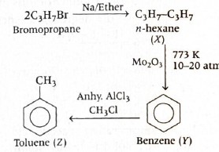
-
Step-by-step explanation
- The first step is: \(2C_3H_7Br \xrightarrow{Na/\text{ether}} C_3H_7{-}C_3H_7\)
- This is the Wurtz reaction, where two alkyl halide molecules couple in the presence of sodium and dry ether.
- So compound \(X\) is \(n\)-hexane.
- Next, \(n\)-hexane \xrightarrow{Mo_2O_3,\ 773\ K,\ 10{-}20\ atm} benzene\)
- This is aromatization or dehydrocyclization of a straight-chain alkane.
- So compound \(Y\) is benzene.
- Finally, \(benzene \xrightarrow{CH_3Cl/\text{anhy. }AlCl_3} methylbenzene\)
- This is Friedel–Crafts alkylation.
- Methylbenzene is toluene.
- Therefore, \(Z =\) toluene.
-
Concept used / theory behind it
- Wurtz reaction: \(2R{-}X + 2Na \rightarrow R{-}R + 2NaX\). It is used to prepare higher alkanes from alkyl halides.
- Aromatization: Long-chain alkanes can cyclize and lose hydrogen under catalytic high-temperature conditions to form aromatic compounds.
- Friedel–Crafts alkylation: Benzene reacts with an alkyl halide in the presence of a Lewis acid like \(AlCl_3\) to form alkyl benzene.
- So this sequence links three standard named reactions from hydrocarbons.
-
Why the correct option is right
- The final step introduces a methyl group onto benzene.
- A benzene ring carrying one \(CH_3\) group is toluene.
- So option (c) is correct.
-
Why other options are wrong
- (a) chlorobenzene: This would require chlorination of benzene, not methylation.
- (b) benzyl chloride: This would require a \(CH_2Cl\) substituent, which is not formed here.
- (d) \(p\)-chlorotoluene: This would require both methylation and chlorination on the ring, but only methyl chloride is used in Friedel–Crafts alkylation here.
-
Exam tip / shortcut / elimination clue
- Whenever you see \(Na/\)ether with alkyl halide, think Wurtz coupling.
- Whenever you see \(CH_3Cl/AlCl_3\) with benzene, think Friedel–Crafts alkylation giving toluene.
- This question becomes very quick if those two standard reactions are remembered.
-
Final result
- \(Z =\) toluene.
- Hence, option (c) is correct.
-
Chapter / topic / subtopic
- Chapter: Hydrocarbons
- Topic: Alkanes and aromatic hydrocarbons
- Subtopic: Wurtz reaction, aromatization and Friedel–Crafts alkylation
-
Correct answer: (d) ethanal
Organic Chemistry – Some Basic Principles, Techniques and Hydrocarbons TTR - Explanation: 1,2-Dibromoethane first undergoes double dehydrohalogenation to form ethyne. Hydration of ethyne in the presence of \(Hg^{2+}/H^+\) gives the enol, which then undergoes keto-enol tautomerism to produce ethanal as the major stable product.
-
Conversion from dibromoethane to the carbonyl product
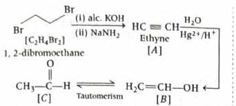
-
Step-by-step explanation
- The starting compound is \(C_2H_4Br_2\), which is 1,2-dibromoethane.
- First it is treated with alcoholic \(KOH\), then with \(NaNH_2\).
- These reagents remove two molecules of \(HBr\) in steps, causing double dehydrohalogenation.
- So compound \(A\) becomes ethyne \((HC \equiv CH)\).
- Now ethyne is treated with \(H_2O\) in the presence of \(Hg^{2+}/H^+\) at \(333\ K\).
- This is acid-catalyzed hydration of an alkyne.
- Water first adds to ethyne to form an unstable enol, \(CH_2 = CHOH\). This is compound \(B\).
- The enol is not stable, so it rapidly undergoes keto-enol tautomerism.
- In tautomerism, the enol form rearranges to the more stable carbonyl form.
- Thus \(CH_2 = CHOH\) converts into \(CH_3CHO\), which is ethanal.
- Therefore the major product \(C\) is ethanal.
-
Concept used / theory behind it
- Vicinal dihalides can undergo elimination of two hydrogen halide molecules to form alkynes.
- Hydration of alkynes in the presence of \(Hg^{2+}/H^+\) gives enols initially.
- Keto-enol tautomerism converts the enol into the corresponding aldehyde or ketone.
- For ethyne, hydration finally gives ethanal.
- This is a very standard conversion in hydrocarbon chemistry and carbonyl chemistry linking elimination, addition and tautomerism.
-
Why the correct option is right
- The final stable product after hydration of ethyne is not the enol.
- It is the tautomerized aldehyde \(CH_3CHO\).
- \(CH_3CHO\) is ethanal.
-
Why other options are wrong
- (a) ethanol: Hydration of ethyne does not give ethanol.
- (b) propanone: The carbon count is wrong; the starting compound has only two carbons.
- (c) ethenol: This is the enol intermediate, not the final major stable product.
-
Exam tip / shortcut / elimination clue
-
Memorize this direct result:
- \(HC \equiv CH \xrightarrow{H_2O,\ Hg^{2+}/H^+} CH_3CHO\)
- If the alkyne is ethyne, hydration gives ethanal after tautomerism.
- Also, if an enol appears in the options, be careful: the question may be asking for the major stable product, which is usually the carbonyl compound.
-
Memorize this direct result:
-
Final result
- The major product \(C\) is \(CH_3CHO\), ethanal.
- Hence, option (d) is correct.
-
Chapter / topic / subtopic
- Chapter: Hydrocarbons
- Topic: Alkynes
- Subtopic: Double dehydrohalogenation, hydration of ethyne and keto-enol tautomerism
-
Correct answer: (d) 5-chloro-4-fluoro-4,
5-dimethylnon-7-en-3-ol
Organic Chemistry – Some Basic Principles, Techniques and Hydrocarbons TTR - Explanation: In IUPAC naming, the parent chain must be numbered so that the principal functional group gets the lowest possible locant. Here, the principal functional group is the alcohol \(({-}OH)\), so numbering must start from the end nearest to the \(({-}OH)\) group, not from the double bond side.
-
Step-by-step explanation
- The longest chain in the structure contains \(9\) carbon atoms, so the parent hydrocarbon is non.
-
The structure contains:
- one double bond
- one \(({-}OH)\) group
- one chloro substituent
- one fluoro substituent
- two methyl substituents
- Since alcohol has higher priority than double bond and halogen substituents, numbering is done from the side nearer to the \(({-}OH)\) group.
-
On proper numbering:
- \(({-}OH)\) comes at carbon \(3\)
- double bond comes at carbon \(7\)
- fluoro is at carbon \(4\)
- chloro is at carbon \(5\)
- methyl groups are at carbons \(4\) and \(5\)
- So the name becomes: \(5\text{-chloro-}4\text{-fluoro-}4,5\text{-dimethylnon-}7\text{-en-}3\text{-ol}\).
-
Concept used / theory behind it
- In IUPAC nomenclature, the order of priority is very important.
- The principal functional group decides the suffix and also controls the numbering direction.
- For compounds containing both \(({-}OH)\) and \(C=C\), the alcohol gets preference in numbering.
- After fixing the parent chain and numbering, substituents are listed in alphabetical order.
- Thus chloro is written before fluoro alphabetically, even though fluoro is at a lower locant.
-
Why the correct option is right
- Option (d) gives the alcohol locant as \(3\), which is the lowest possible and therefore correct.
- It also correctly places the double bond at \(7\) and the substituents at \(4\) and \(5\).
- The suffix format \( \text{non-}7\text{-en-}3\text{-ol} \) is also properly written.
-
Why other options are wrong
- (a) is wrong because the alcohol is written as hydroxy substituent instead of using the suffix \(\text{-ol}\), even though alcohol is the principal functional group.
- (b) is wrong because the double bond locant becomes \(8\) and the name format does not follow the correct numbering priority based on the \(({-}OH)\) group.
- (c) is wrong because the numbering direction is incorrect; it gives the alcohol locant as \(7\), which is not allowed when a lower locant is possible.
-
Exam tip / shortcut / elimination clue
- In naming questions, first identify the principal functional group before doing anything else.
- If \(({-}OH)\) is present, try numbering from the end nearest to it.
- Only after fixing that should you place the double bond and substituents.
- Also remember: principal functional groups use suffixes, not prefixes like hydroxy, unless a higher-priority group is present.
-
Final result
- The correct IUPAC name is \(5\text{-chloro-}4\text{-fluoro-}4,5\text{-dimethylnon-}7\text{-en-}3\text{-ol}\).
- Hence, option (d) is correct.
-
Chapter / topic / subtopic
- Chapter: Organic Chemistry - Some Basic Principles and Techniques
- Topic: IUPAC nomenclature
- Subtopic: Naming of unsaturated alcohols with halogen and alkyl substituents
-
Correct answer: (a) II > I > III
Organic Chemistry – Some Basic Principles, Techniques and Hydrocarbons TTR - Explanation: The uncharged resonance form is always more stable than charged resonance forms. Among the two charged forms, the one with negative charge on the more electronegative atom \((O)\) is more stable than the one with positive charge on oxygen.
-
Step-by-step explanation
- We compare the three resonance structures one by one.
- Structure II is the normal uncharged form.
- It has no charge separation, so it is the most stable resonance contributor.
- Structures I and III are charged forms, so both are less stable than II.
- Now compare I and III.
- In I, the negative charge is on oxygen and the positive charge is on carbon.
- This is reasonable because oxygen is highly electronegative and can stabilize negative charge better.
- In III, oxygen bears positive charge, which is less favorable because oxygen does not prefer positive charge compared with carbon in this context.
- So among I and III, structure I is more stable.
- Hence the order is: \(II > I > III\).
-
Concept used / theory behind it
- More stable resonance structures contribute more to the resonance hybrid.
-
The important stability rules are:
- structures with complete octets are favored
- structures with minimum charge separation are favored
- negative charge should be on more electronegative atoms
- positive charge should preferably be on less electronegative atoms
- That is why neutral forms are usually most stable, and among charged forms, correct placement of charge matters a lot.
-
Why the correct option is right
- II is uncharged, so it is most stable.
- I is charged, but it places negative charge on oxygen, which is acceptable and more stable than III.
- III places positive charge on oxygen, making it the least stable of the three.
- Therefore the correct order is \(II > I > III\).
-
Why other options are wrong
- Any option placing a charged structure above the neutral structure is incorrect.
- Any option placing III above I is also incorrect because positive charge on oxygen is less favorable than negative charge on oxygen.
- So options (b), (c), and (d) violate standard resonance stability rules.
-
Exam tip / shortcut / elimination clue
- In resonance questions, first look for the neutral structure. That is usually the most stable.
- Then compare charged forms by checking where the charges are located.
- Negative charge likes electronegative atoms such as oxygen, nitrogen, and halogens.
- Positive charge on oxygen is usually a warning sign for low stability unless unavoidable.
-
Final result
- The correct order of stability is \(II > I > III\).
- Hence, option (a) is correct.
-
Chapter / topic / subtopic
- Chapter: Organic Chemistry - Some Basic Principles and Techniques
- Topic: Resonance
- Subtopic: Stability of resonance contributors
-
Correct answer: (a) tetragonal
Solid State TTR - Explanation: A tetragonal unit cell has two equal edge lengths and one different edge length, with all angles equal to \(90^\circ\). Since \(a=b\neq c\) and all axial angles are the same, the crystal system is tetragonal.
-
Step-by-step explanation
-
Given:
- \(a=b=200\ pm\)
- \(c=300\ pm\)
- all axial angles are same
- Since all axial angles are same for a standard primitive unit cell here, we take \( \alpha = \beta = \gamma = 90^\circ \).
- Now compare with the standard crystal systems.
- Tetragonal crystal system has: \(a=b\neq c\) and \( \alpha=\beta=\gamma=90^\circ \).
- This exactly matches the given data.
- Therefore the unit cell belongs to the tetragonal system.
-
Given:
-
Concept used / theory behind it
- Crystal systems are identified by comparing unit cell dimensions and angles.
-
The key formulas to remember are:
- Cubic: \(a=b=c,\ \alpha=\beta=\gamma=90^\circ\)
- Tetragonal: \(a=b\neq c,\ \alpha=\beta=\gamma=90^\circ\)
- Orthorhombic: \(a\neq b\neq c,\ \alpha=\beta=\gamma=90^\circ\)
- Monoclinic: \(a\neq b\neq c,\ \alpha=\gamma=90^\circ,\ \beta\neq90^\circ\)
- Rhombohedral: \(a=b=c,\ \alpha=\beta=\gamma\neq90^\circ\)
- Here the pattern directly matches tetragonal.
-
Why the correct option is right
- The defining relation \(a=b\neq c\) is satisfied.
- All angles are equal and taken as \(90^\circ\), which is also the tetragonal condition.
- So option (a) is correct.
-
Why other options are wrong
- (b) rhombohedral is wrong because in rhombohedral systems all three sides are equal: \(a=b=c\).
- (c) monoclinic is wrong because monoclinic cells do not have all axial angles equal.
- (d) cubic is wrong because cubic requires \(a=b=c\), but here \(c\) is different.
-
Exam tip / shortcut / elimination clue
-
Just remember:
- \(a=b=c\) gives cubic if angles are \(90^\circ\)
- \(a=b\neq c\) with all angles \(90^\circ\) gives tetragonal
- This lets you answer such crystal system questions in a few seconds.
-
Just remember:
-
Final result
- The primitive unit cell belongs to the tetragonal crystal system.
- Hence, option (a) is correct.
-
Chapter / topic / subtopic
- Chapter: Solid State
- Topic: Classification of unit cells
- Subtopic: Crystal systems based on edge lengths and axial angles
-
Correct answer: (b) \(96\)
Solutions TTR - Explanation: First calculate the van’t Hoff factor \(i\) using the osmotic pressure formula \( \pi = iCRT \). Then relate \(i\) to the degree of dissociation \(\alpha\) for \(NaCl\), which dissociates into two ions.
-
Step-by-step explanation
-
Given:
- \(\pi = 4.82\ atm\)
- \(T = 300\ K\)
- \(C = 0.1\ N\)
- \(R = 0.082\ L\ atm\ K^{-1}\ mol^{-1}\)
- For this problem, use: \( \pi = iCRT \)
- So, \( i = \frac{\pi}{CRT} = \frac{4.82}{0.1 \times 0.082 \times 300} \)
- Now calculate the denominator: \(0.1 \times 0.082 \times 300 = 2.46\)
- Thus, \( i = \frac{4.82}{2.46} \approx 1.96 \)
- For \(NaCl\), \( NaCl \rightarrow Na^+ + Cl^- \)
- So one formula unit produces \(n=2\) ions.
- The relation between van’t Hoff factor and degree of dissociation is: \( i = 1 + (n-1)\alpha \)
- For \(NaCl\), this becomes: \( i = 1 + \alpha \)
- Substitute \(i=1.96\): \( 1.96 = 1 + \alpha \)
- Hence, \( \alpha = 0.96 \)
- Now write it in the form \(x \times 10^{-2}\): \( 0.96 = 96 \times 10^{-2} \)
- So \(x=96\).
-
Given:
-
Concept used / theory behind it
- Electrolytes dissociate into ions in solution, increasing the number of particles.
- Because colligative properties depend on the number of solute particles, dissociation affects osmotic pressure.
- This effect is included using the van’t Hoff factor \(i\).
- For an electrolyte producing \(n\) ions, \( i = 1 + (n-1)\alpha \).
- For \(NaCl\), since it gives \(2\) ions, the formula simplifies to \( i = 1 + \alpha \).
-
Why the correct option is right
- The calculated van’t Hoff factor is \(1.96\).
- That gives \(\alpha = 0.96\).
- Therefore \(\alpha = 96 \times 10^{-2}\), so \(x=96\).
-
Why other options are wrong
- The other values come from arithmetic mistakes in calculating \(i\), or from using the wrong relation between \(i\) and \(\alpha\).
- A common trap is forgetting that \(NaCl\) gives \(2\) ions, not more.
- Another common mistake is failing to convert \(0.96\) into the form \(x \times 10^{-2}\).
-
Exam tip / shortcut / elimination clue
- For \(NaCl\), directly remember: \( i = 1 + \alpha \).
- So once you find \(i\), just subtract \(1\).
- If \(\alpha\) comes out \(0.96\), the answer in percentage-style form is \(96 \times 10^{-2}\).
-
Final result
- \(\alpha = 0.96 = 96 \times 10^{-2}\)
- Hence, option (b) is correct.
-
Chapter / topic / subtopic
- Chapter: Solutions
- Topic: Osmotic pressure and abnormal molar mass
- Subtopic: van’t Hoff factor and degree of dissociation
-
Correct answer: (b) \(5.0 \times 10^{-2}\)
Electrochemistry and Chemical Kinetics TTR - Explanation: For a weak electrolyte like acetic acid, the degree of dissociation is found from \( \alpha = \dfrac{\Lambda_m}{\Lambda_m^\circ} \). So we first calculate the molar conductivity of the given solution, then compare it with the limiting molar conductivity.
-
Step-by-step explanation
-
Given concentration of acetic acid:
- \(C = 0.01\ \text{mol dm}^{-3}\)
-
Given conductivity:
- \(\kappa = 19.5 \times 10^{-5}\ \text{S cm}^{-1}\)
-
Given limiting molar conductivity:
- \(\Lambda_m^\circ = 390\ \text{S cm}^2 \text{ mol}^{-1}\)
-
Now use the molar conductivity formula:
- \(\Lambda_m = \kappa \times \dfrac{1000}{C}\)
-
Substitute the values:
- \(\Lambda_m = 19.5 \times 10^{-5} \times \dfrac{1000}{0.01}\)
- \(\Lambda_m = 19.5\ \text{S cm}^2 \text{ mol}^{-1}\)
-
Now degree of dissociation:
- \(\alpha = \dfrac{\Lambda_m}{\Lambda_m^\circ} = \dfrac{19.5}{390}\)
- \(\alpha = 0.05 = 5.0 \times 10^{-2}\)
-
Given concentration of acetic acid:
-
Concept used / theory behind it
- Acetic acid is a weak electrolyte, so it does not ionise completely in water.
- Because only a fraction of molecules ionise, its molar conductivity at a given concentration is much smaller than its limiting molar conductivity.
- \(\Lambda_m^\circ\) represents the molar conductivity when dissociation is essentially complete, that is, at infinite dilution.
-
For weak electrolytes, the fraction dissociated is directly
related to the ratio:
- \(\alpha = \dfrac{\Lambda_m}{\Lambda_m^\circ}\)
- This is a very standard PYQ pattern from the chapter Electrochemistry: first compute molar conductivity from conductivity and concentration, then divide by limiting molar conductivity.
-
Why the correct option is right
- The calculated value of \(\alpha\) comes exactly as \(0.05\).
-
In scientific notation:
- \(0.05 = 5.0 \times 10^{-2}\)
- So option (b) matches perfectly.
-
Why other options are wrong
- \(5.0 \times 10^{-5}\) and \(2.5 \times 10^{-5}\) are far too small. These usually come from mishandling the powers of 10 or forgetting the \(1000/C\) factor in molar conductivity.
- \(7.5 \times 10^{-2}\) would mean \(0.075\), which does not come from the correct ratio \(19.5/390\).
-
Exam tip / shortcut / elimination clue
-
For weak electrolytes, remember this direct chain:
- \(\kappa \rightarrow \Lambda_m \rightarrow \alpha\)
- Also notice that \(390\) is much larger than \(19.5\), and \(19.5\) is exactly \(\dfrac{1}{20}\) of \(390\).
- So \(\alpha = \dfrac{1}{20} = 0.05\) can be seen quickly even without lengthy calculation.
-
For weak electrolytes, remember this direct chain:
-
Final result
- The degree of dissociation of acetic acid is \(5.0 \times 10^{-2}\).
-
Chapter / topic / subtopic
- Chapter: Electrochemistry
- Topic: Conductance and molar conductivity
- Subtopic: Degree of dissociation of weak electrolytes using \( \Lambda_m \) and \( \Lambda_m^\circ \)
-
Correct answer: (b) 332
Electrochemistry and Chemical Kinetics TTR - Explanation: From the Arrhenius equation, the slope of the graph of \(\ln k\) versus \(1/T\) is \( -\dfrac{E_a}{R} \). So we compare the given slope directly with this expression and calculate \(E_a\).
-
Step-by-step explanation
-
Arrhenius equation:
- \(k = A e^{-E_a/RT}\)
-
Taking natural logarithm:
- \(\ln k = \ln A - \dfrac{E_a}{RT}\)
-
This is of the form:
- \(y = mx + c\)
-
Here,
- \(y = \ln k\)
- \(x = \dfrac{1}{T}\)
- slope \(m = -\dfrac{E_a}{R}\)
-
Given slope:
- \(m = -4 \times 10^4\ \text{K}\)
-
So,
- \(-\dfrac{E_a}{R} = -4 \times 10^4\)
- \(\dfrac{E_a}{R} = 4 \times 10^4\)
- \(E_a = 4 \times 10^4 \times R\)
-
Substitute \(R = 8.31\ \text{J K}^{-1}\text{ mol}^{-1}\):
- \(E_a = 4 \times 10^4 \times 8.31\)
- \(E_a = 33.24 \times 10^4\ \text{J mol}^{-1}\)
- \(E_a = 3.324 \times 10^5\ \text{J mol}^{-1}\)
- \(E_a = 332.4\ \text{kJ mol}^{-1}\)
- Therefore, the nearest option is \(332\ \text{kJ mol}^{-1}\).
-
Arrhenius equation:
-
Concept used / theory behind it
- The Arrhenius equation connects the rate constant \(k\) with temperature \(T\).
- \(E_a\) is the activation energy, which is the minimum energy barrier reactant molecules must cross for reaction to occur.
- When the Arrhenius equation is converted into straight-line form, a graph of \(\ln k\) versus \(1/T\) gives a straight line.
-
The most important memory point is:
- slope of \(\ln k\) vs \(1/T = -E_a/R\)
- Because the slope is negative, the line falls as \(1/T\) increases.
- This is a favourite exam question because it tests whether you know the graph form, not just the original Arrhenius equation.
-
Why the correct option is right
- Using \(E_a = 4 \times 10^4 \times 8.31\), we get about \(332\ \text{kJ mol}^{-1}\).
- That matches option (b).
-
Why other options are wrong
- 166 would come if someone roughly used half the correct value.
- 765 and 382 do not match the direct Arrhenius slope relation.
- Many students make mistakes here by forgetting the negative sign, forgetting the role of \(R\), or not converting joules to kilojoules.
-
Exam tip / shortcut / elimination clue
-
Memorise these two slopes:
- \(\ln k\) vs \(1/T \Rightarrow \text{slope} = -E_a/R\)
- \(\log k\) vs \(1/T \Rightarrow \text{slope} = -E_a/(2.303R)\)
- This question uses \(\ln k\), not \(\log k\). That distinction is very important.
- After multiplying \(4 \times 10^4\) by about \(8.3\), you get about \(3.3 \times 10^5\ \text{J mol}^{-1}\), which is about \(330\ \text{kJ mol}^{-1}\). So option (b) can be identified quickly.
-
Memorise these two slopes:
-
Final result
- The activation energy is \(332\ \text{kJ mol}^{-1}\).
-
Chapter / topic / subtopic
- Chapter: Chemical Kinetics
- Topic: Arrhenius equation
- Subtopic: Determination of activation energy from graph slope
-
Correct answer: (d) I and II only
Surface Chemistry TTR - Explanation: Tyndall effect is the scattering of light by colloidal particles. True solutions do not show this effect, so statement (I) is correct. It is observed when the refractive indices of the dispersed phase and dispersion medium differ appreciably, so statement (II) is also correct. Statement (III) is incorrect because the particle size should not be much smaller than the wavelength in the way stated here.
-
Step-by-step explanation
-
Statement (I):
- Tyndall effect helps distinguish a colloidal solution from a true solution.
- When a beam of light passes through a colloid, the path of the beam becomes visible due to scattering.
- In a true solution, particles are too small to scatter light appreciably, so the path is not seen.
- So statement (I) is correct.
-
Statement (II):
- Tyndall effect is prominent only when there is sufficient difference in refractive index between the dispersed phase and the dispersion medium.
- If both have nearly the same refractive index, scattering becomes negligible.
- So statement (II) is also correct.
-
Statement (III):
- This statement says the effect is observed only when colloidal particles are much smaller than the wavelength of light used.
- That wording is not correct for the standard NCERT-level description used in colloids.
- The Tyndall effect is associated with colloidal-sized particles that are capable of scattering light; the statement as given is not accepted as correct here.
- So statement (III) is wrong.
-
Hence, the correct combination is:
- I and II only
-
Statement (I):
-
Concept used / theory behind it
- Tyndall effect is a characteristic property of colloids.
- A colloidal solution contains particles larger than those in a true solution but still small enough to remain suspended.
- These particles scatter light, making the path of light visible.
- This scattering is why fog, smoke, or dust in air can make a light beam visible.
- True solutions do not show the effect because their solute particles are molecular or ionic in size and are too small to scatter visible light significantly.
- This topic belongs to Surface Chemistry and very often appears as a theory-based elimination question.
-
Why the correct option is right
- Statement (I) is right because Tyndall effect is indeed used to tell a colloid apart from a true solution.
- Statement (II) is right because scattering depends on the difference in refractive indices.
- Statement (III) is not accepted as correct in this question, so the correct choice is only I and II.
-
Why other options are wrong or less suitable
- Any option containing statement (III) becomes incorrect.
- So options (a), (b), and (c) are eliminated immediately.
-
Exam tip / shortcut / elimination clue
-
Whenever you see Tyndall effect, immediately think:
- scattering of light by colloidal particles
- used to distinguish colloid from true solution
- Also remember that a clear statement about refractive index difference usually supports Tyndall effect.
- If an option wrongly overstates the size condition, it is often the trap statement.
-
Whenever you see Tyndall effect, immediately think:
-
Final result
- The correct statements are I and II only.
-
Chapter / topic / subtopic
- Chapter: Surface Chemistry
- Topic: Colloids
- Subtopic: Tyndall effect and properties of colloidal solutions
-
Correct answer: (c) A-III, B-IV, C-II, D-I
General Principles of Metallurgy TTR - Explanation: Each metal refining method is used based on a particular physical or chemical property of the metal or its impurity. Matching the standard methods gives Zone refining → Gallium, Poling → Copper, Liquation → Tin, and Vapour phase refining → Titanium.
-
Step-by-step explanation
-
(A) Zone refining
- This method is used for very high purity metals, especially those used in semiconductors.
- It works on the principle that impurities are more soluble in the molten state than in the solid state.
- Typical examples include silicon, germanium and gallium.
- So, (A) Zone refining → (III) Gallium.
-
(B) Poling
- Poling is used for refining metals like copper.
- In this method, green wood poles are stirred into the molten metal.
- The gases produced reduce metal oxides present as impurities.
- This is especially associated with the refining of blister copper.
- So, (B) Poling → (IV) Copper.
-
(C) Liquation
- Liquation is used for metals with low melting points.
- The impure metal is heated on a sloping hearth.
- The easily fusible metal melts and flows away, leaving behind less fusible impurities.
- Tin is a standard example.
- So, (C) Liquation → (II) Tin.
-
(D) Vapour phase refining
- This method is based on converting a metal into a volatile compound and then decomposing that compound to obtain pure metal.
- Titanium is refined by this type of method through formation of volatile iodide in the van Arkel process.
- So, (D) Vapour phase refining → (I) Titanium.
-
Thus the complete matching is:
- \(A \rightarrow III\)
- \(B \rightarrow IV\)
- \(C \rightarrow II\)
- \(D \rightarrow I\)
-
(A) Zone refining
-
Concept used / theory behind it
- This question comes from General Principles and Processes of Isolation of Elements.
- Refining means purification of an impure metal obtained after extraction.
-
Different refining methods are chosen according to
properties such as:
- melting point
- volatility
- solubility of impurities in molten metal
- reactivity of oxide impurities
-
Important standard associations to remember:
- Zone refining → semiconductor-grade metals like Si, Ge, Ga
- Poling → copper
- Liquation → low melting metals like tin
- Vapour phase refining → Ti, Zr, Ni type cases depending on the process
-
Why the correct option is right
-
The exact standard matches are:
- A-III
- B-IV
- C-II
- D-I
- This corresponds to option (c).
-
The exact standard matches are:
-
Why other options are wrong or less suitable
- Any option assigning copper to zone refining is wrong.
- Any option assigning tin to vapour phase refining is wrong.
- Any option not matching titanium with vapour phase refining is also incorrect in this context.
-
Exam tip / shortcut / elimination clue
-
Remember a few anchor pairs:
- Poling → Copper
- Liquation → Tin
- Zone refining → Gallium
- Once these three are fixed, the remaining one automatically becomes Vapour phase refining → Titanium.
- This is the fastest way to solve such matching questions in entrance exams.
-
Remember a few anchor pairs:
-
Final result
- The correct match is A-III, B-IV, C-II, D-I.
-
Chapter / topic / subtopic
- Chapter: General Principles and Processes of Isolation of Elements
- Topic: Refining of metals
- Subtopic: Zone refining, poling, liquation and vapour phase refining
-
Correct answer: (b) (A) and (R) are true but (R) is not
correct explanation of (A).
p-Block Elements (Groups 15 to 18) TTR - Explanation: Nitrogen does not form pentahalides because it does not have vacant \(d\)-orbitals in its valence shell and hence cannot expand its covalency beyond four. However, nitrogen can still show \(+5\) oxidation state in compounds like \(HNO_3\), \(N_2O_5\) and nitrates. So both Assertion and Reason are true, but the Reason does not explain the Assertion.
-
Step-by-step explanation
-
First check the Assertion:
- Nitrogen belongs to group 15.
- Its electronic configuration is \(1s^2\,2s^2\,2p^3\).
- The valence shell is the second shell, which contains only \(2s\) and \(2p\) orbitals.
- There are no vacant \(d\)-orbitals in the valence shell of nitrogen.
- So nitrogen cannot increase its covalency to 5 and therefore does not form pentahalides such as \(NCl_5\) or \(NF_5\).
- Hence, Assertion (A) is true.
-
Now check the Reason:
- Nitrogen can show oxidation states from \(-3\) to \(+5\).
- In compounds like \(HNO_3\), \(N_2O_5\), \(NO_3^-\), nitrogen is in the \(+5\) oxidation state.
- So Reason (R) is also true.
-
Now see whether the Reason explains the Assertion:
- The statement “nitrogen can exhibit \(+5\) oxidation state” tells us about oxidation state.
- But pentahalide formation depends on covalency and the availability of orbitals to make five bonds.
- Oxidation state and covalency are related ideas, but they are not the same thing.
- Thus the Reason is true, but it is not the correct explanation for why nitrogen does not form pentahalides.
-
First check the Assertion:
-
Concept used / theory behind it
- This is a classic distinction between oxidation state and covalency.
- Oxidation state is a formal charge-like concept used for electron bookkeeping.
- Covalency means the number of covalent bonds formed by an atom.
- Nitrogen can reach \(+5\) oxidation state because when bonded to more electronegative atoms like oxygen, the shared electrons are assigned away from nitrogen in oxidation number calculation.
- But to form a pentahalide, nitrogen would need to form five covalent bonds around itself.
- Since nitrogen is a second-period element, it cannot expand its octet and cannot accommodate five bonding pairs around the central atom.
- This is why nitrogen forms trihalides like \(NCl_3\), but not pentahalides, whereas phosphorus can form \(PCl_5\) and \(PF_5\).
-
Why the correct option is right
- Assertion is true: nitrogen does not form pentahalides.
- Reason is true: nitrogen can show \(+5\) oxidation state.
- But the actual reason for non-formation of pentahalides is the absence of available orbitals for expanding covalency, not inability to show \(+5\) oxidation state.
- So option (b) is correct.
-
Why other options are wrong or less suitable
- Option (a) is wrong because although both statements are true, the Reason does not explain the Assertion.
- Option (c) is wrong because the Reason is not false; nitrogen really can show \(+5\) oxidation state.
- Option (d) is wrong because the Assertion is also true.
-
Exam tip / shortcut / elimination clue
-
Whenever you see nitrogen and pentahalides, immediately
recall:
- second period element
- no octet expansion
- no pentahalides
-
Also remember this high-yield comparison:
- \(N\): no \(NX_5\)
- \(P\): forms \(PX_5\)
- If the reason talks only about oxidation state, be careful: that often does not fully explain covalency-based behaviour.
-
Whenever you see nitrogen and pentahalides, immediately
recall:
-
Final result
- Both Assertion and Reason are true, but Reason is not the correct explanation of Assertion.
- Answer: (b)
-
Chapter / topic / subtopic
- Chapter: The p-Block Elements
- Topic: Group 15 elements
- Subtopic: Pentahalide formation, oxidation state and covalency of nitrogen
-
Correct answer: (c) \(P_4 < S_6 < S_8 <
O_3\)
p-Block Elements (Groups 15 to 18) TTR - Explanation: We compare the approximate bond angles in all four molecules: in \(P_4\), the \(P-P-P\) angle is \(60^\circ\); in \(S_6\), the \(S-S-S\) angle is about \(102.2^\circ\); in \(S_8\), it is about \(107^\circ\); and in \(O_3\), the bond angle is about \(116.8^\circ\). Therefore the increasing order is \(P_4 < S_6 < S_8 < O_3\).
-
Step-by-step explanation
- To solve this question, we must know or infer the geometry of each molecule and then compare their bond angles.
-
Bond-angle sketches from the given solution
-
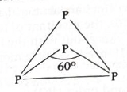
-
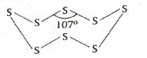
-
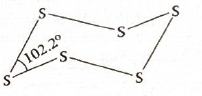
-
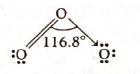
-
-
\(P_4\)
- \(P_4\) has a tetrahedral cage-like structure.
- Each phosphorus atom lies at a corner of a regular tetrahedron.
- Because of this strained tetrahedral cage, the \(P-P-P\) bond angle is only \(60^\circ\).
-
\(S_6\)
- \(S_6\) exists in a chair-like ring form.
- The \(S-S-S\) bond angle is about \(102.2^\circ\).
-
\(S_8\)
- \(S_8\) is the familiar crown-shaped sulphur ring.
- The \(S-S-S\) bond angle is about \(107^\circ\).
-
\(O_3\)
- Ozone is bent.
- The central oxygen is \(sp^2\)-hybridised in the usual simplified description.
- The ideal trigonal planar angle would be \(120^\circ\), but because of lone pair-bond pair repulsion, it decreases to about \(116.8^\circ\).
-
Now arrange all values in increasing order:
- \(60^\circ < 102.2^\circ < 107^\circ < 116.8^\circ\)
- So, \(P_4 < S_6 < S_8 < O_3\)
-
Concept used / theory behind it
- This question mixes molecular shape memory with bond-angle comparison.
- \(P_4\) is special because it is highly strained. A \(60^\circ\) angle is far smaller than the ideal tetrahedral angle of \(109.5^\circ\), which makes \(P_4\) unusually reactive compared with many other phosphorus forms.
- \(S_6\) and \(S_8\) are cyclic sulphur allotropes with different ring conformations, so their bond angles are different.
- \(O_3\) is bent due to the presence of a lone pair on the central oxygen, but its angle still remains much larger than the sulphur ring angles.
- In such questions, exact values need not always be freshly derived; many are standard remembered structural facts from inorganic chemistry.
-
Why the correct option is right
-
The bond angles are:
- \(P_4 = 60^\circ\)
- \(S_6 = 102.2^\circ\)
- \(S_8 = 107^\circ\)
- \(O_3 = 116.8^\circ\)
- This exactly matches option (c).
-
The bond angles are:
-
Why other options are wrong or less suitable
- Any option placing \(P_4\) anywhere other than the smallest is incorrect, because \(60^\circ\) is by far the least angle here.
- Any option placing \(O_3\) below \(S_6\) or \(S_8\) is incorrect because \(116.8^\circ\) is the largest angle in this set.
- Between \(S_6\) and \(S_8\), remember \(102.2^\circ < 107^\circ\), so \(S_6\) must come before \(S_8\).
-
Exam tip / shortcut / elimination clue
-
Anchor the two extremes first:
- \(P_4\) is smallest due to \(60^\circ\) strained cage
- \(O_3\) is largest at about \(116.8^\circ\)
-
Then only compare \(S_6\) and \(S_8\):
- \(S_6 \approx 102^\circ\)
- \(S_8 \approx 107^\circ\)
- This lets you reach the correct answer very quickly even if you do not remember every value perfectly at first glance.
-
Anchor the two extremes first:
-
Final result
- The correct increasing order of bond angles is \(P_4 < S_6 < S_8 < O_3\).
- Answer: (c)
-
Chapter / topic / subtopic
- Chapter: The p-Block Elements
- Topic: Structures and allotropes of phosphorus, sulphur and ozone
- Subtopic: Bond-angle comparison in \(P_4\), \(S_6\), \(S_8\) and \(O_3\)
-
Correct answer: (b) \(4HCl + O_2 \xrightarrow{\text{CuCl}_2,\
723\ \text{K}} 2H_2O + 2Cl_2\)
p-Block Elements (Groups 15 to 18) TTR - Explanation: Deacon’s method is the industrial preparation of chlorine by oxidation of hydrogen chloride with oxygen in the presence of \(CuCl_2\) catalyst at about \(723\ \text{K}\). Hence option (b) represents Deacon’s method.
-
Step-by-step explanation
- Deacon’s method is used for manufacturing chlorine gas from hydrogen chloride.
-
In this process:
- \(HCl\) is oxidised by oxygen from air.
- \(CuCl_2\) acts as catalyst.
- The process is carried out at about \(723\ \text{K}\).
-
The balanced reaction is:
- \(4HCl + O_2 \xrightarrow{\text{CuCl}_2,\ 723\ \text{K}} 2H_2O + 2Cl_2\)
- So when you look at the options, the reaction that matches this standard equation is option (b).
-
Concept used / theory behind it
- This comes from the chapter The p-Block Elements, under chlorine and its compounds.
- Historically, Deacon’s method is important because it recovers chlorine from \(HCl\).
-
It is basically an oxidation reaction:
- \(Cl\) in \(HCl\) has oxidation state \(-1\)
- \(Cl\) in \(Cl_2\) has oxidation state \(0\)
- So chloride is oxidised, while oxygen is reduced to water.
- This is a favourite exam memory-based reaction in entrance chemistry.
-
Why the correct option is right
-
Only option (b) shows:
- \(HCl\) as reactant
- \(O_2\) as oxidising agent
- \(CuCl_2\) catalyst
- high temperature around \(723\ \text{K}\)
- formation of chlorine and water
- That is exactly the identity of Deacon’s method.
-
Only option (b) shows:
-
Why other options are wrong or less suitable
- Option (a) is the reverse type of idea and is not the industrial chlorine preparation reaction known as Deacon’s method.
- Option (c) is electrolysis of brine, which is a different method for preparing chlorine and sodium hydroxide.
- Option (d) is the formation of bleaching powder, not Deacon’s method.
-
Exam tip / shortcut / elimination clue
-
For Deacon’s method, remember this keyword set:
- \(HCl + O_2\)
- \(CuCl_2\)
- \(723\ \text{K}\)
- \(Cl_2\) formation
- If you see electrolysis of brine, that is not Deacon’s method.
- If you see bleaching powder formation, that is also not Deacon’s method.
-
For Deacon’s method, remember this keyword set:
-
Final result
- The reaction representing Deacon’s method is option (b).
-
Chapter / topic / subtopic
- Chapter: The p-Block Elements
- Topic: Chlorine
- Subtopic: Preparation of chlorine by Deacon’s method
-
Correct answer: (a) 1, 2, 3, 1
p-Block Elements (Groups 15 to 18) TTR - Explanation: We count the bond pairs and lone pairs around xenon in each molecule using the valence electron count and the standard structures of xenon fluorides and oxyfluoride. The lone pairs on xenon are: \(XeOF_4 \rightarrow 1\), \(XeF_4 \rightarrow 2\), \(XeF_2 \rightarrow 3\), and \(XeF_6 \rightarrow 1\).
-
Step-by-step explanation
-
Structures and lone pairs around xenon
-
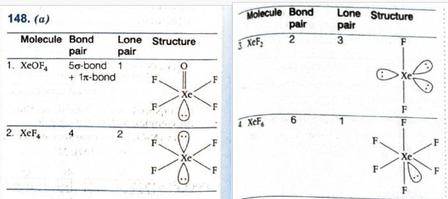
-
-
For \(XeOF_4\)
- Xenon has 8 valence electrons.
- In \(XeOF_4\), xenon is bonded to four fluorine atoms and one oxygen atom.
- That gives five bonding regions around xenon.
- The standard structure has one lone pair on xenon.
- So, lone pairs in \(XeOF_4 = 1\).
-
For \(XeF_4\)
- Xenon forms four \(Xe-F\) bonds.
- There are six electron pairs around xenon in total.
- Out of these, four are bond pairs and two are lone pairs.
- That is why \(XeF_4\) has square planar shape.
- So, lone pairs in \(XeF_4 = 2\).
-
For \(XeF_2\)
- Xenon forms two \(Xe-F\) bonds.
- There are five electron pairs around xenon.
- Out of these, two are bond pairs and three are lone pairs.
- That gives linear molecular shape after the three lone pairs occupy equatorial positions.
- So, lone pairs in \(XeF_2 = 3\).
-
For \(XeF_6\)
- Xenon forms six \(Xe-F\) bonds.
- One lone pair remains on xenon.
- So, lone pairs in \(XeF_6 = 1\).
-
Hence the required sequence is:
- \(1, 2, 3, 1\)
-
Structures and lone pairs around xenon
-
Concept used / theory behind it
- Xenon is a noble gas, but it can form compounds with highly electronegative atoms like fluorine and oxygen.
- To determine lone pairs, we use VSEPR theory and valence electron counting.
-
Important standard results to remember:
- \(XeF_2\): \(3\) lone pairs
- \(XeF_4\): \(2\) lone pairs
- \(XeF_6\): \(1\) lone pair
- \(XeOF_4\): \(1\) lone pair
- These are very frequently asked direct-concept questions from noble gas compounds.
-
You should also connect them with shape:
- \(XeF_2\): linear
- \(XeF_4\): square planar
- \(XeF_6\): distorted octahedral
- \(XeOF_4\): square pyramidal
-
Why the correct option is right
-
The lone pair counts are exactly:
- \(XeOF_4 = 1\)
- \(XeF_4 = 2\)
- \(XeF_2 = 3\)
- \(XeF_6 = 1\)
- So the sequence is \(1, 2, 3, 1\), which matches option (a).
-
The lone pair counts are exactly:
-
Why other options are wrong or less suitable
- Any option that gives \(XeF_2\) anything other than 3 lone pairs is wrong.
- Any option that gives \(XeF_4\) anything other than 2 lone pairs is wrong.
- \(XeF_6\) does not have zero lone pairs; it has one lone pair.
-
Exam tip / shortcut / elimination clue
-
Memorise the descending pattern:
- \(XeF_2 \rightarrow 3\) lone pairs
- \(XeF_4 \rightarrow 2\) lone pairs
- \(XeF_6 \rightarrow 1\) lone pair
- Then separately remember \(XeOF_4\) also has \(1\) lone pair.
- This lets you answer the whole question in seconds.
-
Memorise the descending pattern:
-
Final result
- The required numbers of lone pairs are 1, 2, 3, 1.
- Answer: (a)
-
Chapter / topic / subtopic
- Chapter: The p-Block Elements
- Topic: Noble gas compounds
- Subtopic: Lone pairs and structures of xenon fluorides and oxyfluoride
-
Correct answer: (c) \(W > Mo > Cr\)
d and f Block Elements & Coordination Compounds TTR - Explanation: Among chromium, molybdenum and tungsten, tungsten has the highest melting point, molybdenum comes next, and chromium has the lowest of the three. Therefore, the correct order is \(W > Mo > Cr\).
-
Step-by-step explanation
- This is a direct factual comparison question from transition elements.
-
The standard melting points are approximately:
- \(W = 3422^\circ\text{C}\)
- \(Mo = 2623^\circ\text{C}\)
- \(Cr = 1907^\circ\text{C}\)
-
Now compare these values:
- \(3422 > 2623 > 1907\)
-
So the order of melting points is:
- \(W > Mo > Cr\)
-
Concept used / theory behind it
- Transition metals generally have high melting points because of strong metallic bonding.
- In transition elements, both \(ns\) and \((n-1)d\) electrons can participate in metallic bonding.
- Stronger metallic bonding usually means higher melting and boiling points.
- Tungsten is especially famous for its very high melting point, which is why it has long been used in applications requiring very high temperatures.
- Molybdenum also has a high melting point, but lower than tungsten.
- Chromium has a lower melting point than both Mo and W in this set.
-
Why the correct option is right
-
The known order based on actual melting point values is:
- \(W > Mo > Cr\)
- This matches option (c).
-
The known order based on actual melting point values is:
-
Why other options are wrong or less suitable
- Option (a) is wrong because chromium does not have the highest melting point here.
- Option (b) is wrong because tungsten must be highest, not lowest.
- Option (d) is wrong because molybdenum has a higher melting point than chromium.
-
Exam tip / shortcut / elimination clue
-
Remember one anchor fact very clearly:
- Tungsten has an exceptionally high melting point.
- So any option not placing \(W\) first can be rejected immediately.
- Between Mo and Cr, remember \(Mo\) melts at a higher temperature than \(Cr\).
-
Remember one anchor fact very clearly:
-
Final result
- The correct order of melting points is \(W > Mo > Cr\).
-
Chapter / topic / subtopic
- Chapter: d- and f-Block Elements
- Topic: Physical properties of transition elements
- Subtopic: Comparison of melting points of transition metals
-
Correct answer: (c) \([Ni(CO)_4]\) — Paramagnetic
d and f Block Elements & Coordination Compounds TTR - Explanation: \(Ni(CO)_4\) is actually diamagnetic, not paramagnetic. So the given match in option (c) is incorrect. The other three matches are correct.
-
Step-by-step explanation
- This question is solved by finding the oxidation state, electronic configuration, ligand strength, and then deciding whether unpaired electrons are present or not.
-
Orbital and hybridisation clues from the given
solution
-
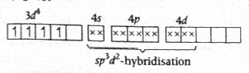
-
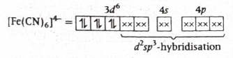
-
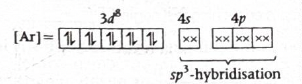
-
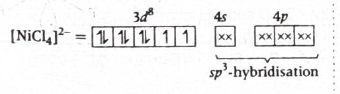
-
-
Option (a): \([Cr(H_2O)_6]Br_2\)
- The complex ion is \([Cr(H_2O)_6]^{2+}\), because two \(Br^-\) ions are outside the coordination sphere.
- So oxidation state of chromium is \(+2\).
- \(Cr = (Z=24)\), so \(Cr^{2+}\) is \(3d^4\).
- \(H_2O\) is a weak field ligand, so pairing does not occur strongly.
- The complex remains high spin with unpaired electrons.
- Hence it is paramagnetic.
- So option (a) is correctly matched.
-
Option (b): \(Na_4[Fe(CN)_6]\)
- The complex ion is \([Fe(CN)_6]^{4-}\).
- Each \(CN^-\) is \(-1\), so oxidation state of Fe is \(+2\).
- \(Fe^{2+}\) is \(3d^6\).
- \(CN^-\) is a strong field ligand, so electrons pair up.
- This gives a low-spin \(d^6\) complex with no unpaired electrons.
- Hence it is diamagnetic.
- So option (b) is correctly matched.
-
Option (c): \([Ni(CO)_4]\)
- In \(Ni(CO)_4\), carbon monoxide is a neutral ligand.
- So oxidation state of Ni is \(0\).
- \(Ni^0\) has configuration \(3d^8 4s^2\), which is effectively rearranged to give a filled \(3d^{10}\) situation in the complex.
- \(CO\) is a strong field ligand and causes pairing.
- \(Ni(CO)_4\) is tetrahedral with \(sp^3\) hybridisation and has no unpaired electrons.
- Therefore it is diamagnetic, not paramagnetic.
- So option (c) is the incorrect match.
-
Option (d): \(Na_2[NiCl_4]\)
- The complex ion is \([NiCl_4]^{2-}\).
- Each \(Cl^-\) is \(-1\), so oxidation state of Ni is \(+2\).
- \(Ni^{2+}\) is \(3d^8\).
- \(Cl^-\) is a weak field ligand.
- \([NiCl_4]^{2-}\) is tetrahedral and has two unpaired electrons.
- So it is paramagnetic.
- Hence option (d) is correctly matched.
-
Concept used / theory behind it
- Magnetic behaviour of coordination compounds depends on the number of unpaired electrons.
-
To determine that, you should follow this chain:
- find oxidation state
- find \(d\)-electron count
- identify weak field or strong field ligand
- decide high spin or low spin
- count unpaired electrons
-
Very important ligand facts:
- \(CN^-\) and \(CO\) are strong field ligands
- \(H_2O\) is usually weak to medium field
- \(Cl^-\) is weak field
-
Also remember:
- \(Ni(CO)_4\) is a very famous diamagnetic carbonyl complex
- \([NiCl_4]^{2-}\) is tetrahedral and paramagnetic
-
Why the correct option is right
- Option (c) says \(Ni(CO)_4\) is paramagnetic.
- But \(Ni(CO)_4\) has no unpaired electrons and is diamagnetic.
- Therefore, option (c) is the incorrect match asked in the question.
-
Why other options are right
- \([Cr(H_2O)_6]^{2+}\) is paramagnetic because of unpaired electrons in \(d^4\).
- \([Fe(CN)_6]^{4-}\) is diamagnetic because strong field \(CN^-\) causes pairing in low-spin \(d^6\).
- \([NiCl_4]^{2-}\) is paramagnetic because tetrahedral \(d^8\) with weak field ligand \(Cl^-\) leaves unpaired electrons.
-
Exam tip / shortcut / elimination clue
-
Memorise these three standard cases:
- \(Ni(CO)_4\) → diamagnetic
- \([NiCl_4]^{2-}\) → paramagnetic
- \([Ni(CN)_4]^{2-}\) → diamagnetic
- These are very frequently tested as direct application questions.
- If you remember \(Ni(CO)_4\) is diamagnetic, the answer can be marked immediately.
-
Memorise these three standard cases:
-
Final result
- The incorrect match is \([Ni(CO)_4]\) — Paramagnetic.
- Answer: (c)
-
Chapter / topic / subtopic
- Chapter: Coordination Compounds
- Topic: Magnetic properties of coordination complexes
- Subtopic: Oxidation state, ligand strength and paramagnetic/diamagnetic behaviour
-
Correct answer: (b) A-III, B-I, C-IV, D-II
Polymers TTR - Explanation: Bakelite is formed from phenol and formaldehyde, natural rubber is formed from isoprene \((2\text{-methyl-}1,3\text{-butadiene})\), Glyptal is formed from phthalic acid and ethylene glycol, and nylon-2-nylon-6 is formed from glycine and aminocaproic acid. Therefore the correct match is A-III, B-I, C-IV, D-II.
-
Step-by-step explanation
-
(A) Bakelite
- Bakelite is a phenol-formaldehyde resin.
-
So, Bakelite is formed from:
- Phenol + formaldehyde
- Hence, \(A \rightarrow III\).
-
(B) Natural rubber
- Natural rubber is a polymer of isoprene.
-
Isoprene is:
- \(2\text{-methyl-}1,3\text{-butadiene}\)
- Hence, \(B \rightarrow I\).
-
(C) Glyptal
- Glyptal is a polyester.
-
It is prepared from:
- Phthalic acid + ethylene glycol
- Hence, \(C \rightarrow IV\).
-
(D) Nylon-2-nylon-6
- Nylon-2-nylon-6 is formed from amino acid type monomers.
-
It is produced from:
- Glycine + aminocaproic acid
- Hence, \(D \rightarrow II\).
-
So the complete correct matching is:
- \(A \rightarrow III\)
- \(B \rightarrow I\)
- \(C \rightarrow IV\)
- \(D \rightarrow II\)
-
(A) Bakelite
-
Concept used / theory behind it
- This is a polymer chemistry memory-based matching question.
- Such questions are solved by remembering the standard polymer-monomer pairs.
-
Important pairs here are:
- Bakelite → phenol + formaldehyde
- Natural rubber → isoprene
- Glyptal → phthalic acid + ethylene glycol
- Nylon-2-nylon-6 → glycine + aminocaproic acid
- Bakelite is a thermosetting polymer.
- Natural rubber is an addition polymer of isoprene.
- Glyptal is a condensation polymer.
- Nylon-2-nylon-6 is a polyamide.
-
Why the correct option is right
-
The standard textbook polymer-monomer associations give:
- A-III
- B-I
- C-IV
- D-II
- This matches option (b).
-
The standard textbook polymer-monomer associations give:
-
Why other options are wrong or less suitable
- Any option not matching natural rubber with isoprene is incorrect.
- Any option not matching Bakelite with phenol and formaldehyde is incorrect.
- Any option not matching Glyptal with phthalic acid and ethylene glycol is incorrect.
-
Exam tip / shortcut / elimination clue
-
Memorise a few anchor polymer pairs:
- Bakelite → phenol + formaldehyde
- Natural rubber → isoprene
- Glyptal → phthalic acid + ethylene glycol
- Once these are fixed, the remaining monomer set automatically goes to nylon-2-nylon-6.
-
Memorise a few anchor polymer pairs:
-
Final result
- The correct matching is A-III, B-I, C-IV, D-II.
- Answer: (b)
-
Chapter / topic / subtopic
- Chapter: Polymers
- Topic: Types of polymers and monomers
- Subtopic: Matching standard polymers with their monomers
-
Correct answer: (b) \(-NH_2,\ -COOH,\ -C(=O)-NH_2\)
Biomolecules TTR - Explanation: Asparagine contains an \(\alpha\)-amino group \(( -NH_2 )\), an \(\alpha\)-carboxylic acid group \(( -COOH )\), and in its side chain it contains a carboxamide group \(( -C(=O)-NH_2 )\). Therefore option (b) is correct.
-
Step-by-step explanation
-
Structure clue from the given solution
-
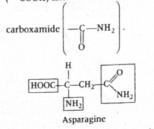
-
- Asparagine is an amino acid.
-
Like standard \(\alpha\)-amino acids, it has:
- one amino group \(( -NH_2 )\)
- one carboxyl group \(( -COOH )\)
-
Its side chain is:
- \(-CH_2-CONH_2\)
-
This means the side chain contains an amide functional
group:
- \(-C(=O)-NH_2\)
-
So the three functional groups present in asparagine are:
- \(-NH_2\)
- \(-COOH\)
- \(-C(=O)-NH_2\)
- Hence the correct option is (b).
-
Structure clue from the given solution
-
Concept used / theory behind it
-
Amino acids contain at least two common groups:
- amino group \(( -NH_2 )\)
- carboxyl group \(( -COOH )\)
- What makes one amino acid different from another is the side chain, denoted by \(R\).
- In asparagine, the side chain contains an amide group.
- That is why asparagine is classified among amino acids having an amide-containing side chain.
- This question checks whether you can identify functional groups from a known biomolecule structure.
-
Amino acids contain at least two common groups:
-
Why the correct option is right
-
Option (b) includes exactly the three groups found in
asparagine:
- amino
- carboxylic acid
- amide
- So option (b) is correct.
-
Option (b) includes exactly the three groups found in
asparagine:
-
Why other options are wrong or less suitable
- Option (a) is wrong because \(-NH\) is not the correct third functional group here; the side chain is specifically an amide \(-CONH_2\).
- Option (c) is wrong because asparagine does not contain an acid chloride group \(( -C(=O)-Cl )\).
- Option (d) is wrong because the side chain does not contain a hydroxyl group \(( -OH )\).
-
Exam tip / shortcut / elimination clue
- Do not just look for isolated atoms like \(N\) or \(O\); identify the whole functional group pattern.
-
For asparagine, remember the side chain:
- \(-CH_2-CONH_2\)
- That instantly tells you the third group is amide, not alcohol, amine alone, or acid chloride.
-
Final result
- The functional groups present in asparagine are \(-NH_2,\ -COOH,\ -C(=O)-NH_2\).
- Answer: (b)
-
Chapter / topic / subtopic
- Chapter: Biomolecules
- Topic: Amino acids
- Subtopic: Functional groups present in asparagine
-
Correct answer: (c) equanil
Chemistry in Everyday Life TTR - Explanation: Equanil is a tranquilizer. Tranquilizers are drugs used to reduce anxiety, emotional tension and mental stress, and some are used in controlling conditions like depression-related symptoms and hypertension associated with tension. Hence the correct answer is equanil.
-
Step-by-step explanation
- This is a direct drug-classification question from chemistry in everyday life.
-
We identify each option by its usual medicinal use:
- Ranitidine is used to reduce stomach acid secretion.
- Paracetamol is an analgesic and antipyretic, used for pain and fever.
- Equanil is a tranquilizer.
- Chloramphenicol is an antibiotic.
- Among these, the medicine associated with controlling depression and hypertension is equanil.
-
Concept used / theory behind it
- This question belongs to the chapter Chemistry in Everyday Life.
- Drugs are often classified by their therapeutic action.
- Tranquilizers are chemical substances used to treat stress, anxiety, and certain mental disorders by calming the nervous system.
- Equanil is one of the standard examples of a tranquilizer in entrance-level chemistry.
- These questions are often memory-based, so it helps to remember one famous example from each drug class.
-
Why the correct option is right
- Equanil belongs to the tranquilizer class.
- That is the drug category linked in this syllabus context with control of depression and hypertension.
- So option (c) is correct.
-
Why other options are wrong or less suitable
- Ranitidine is not a tranquilizer; it is used for acidity and ulcer-related conditions.
- Paracetamol is for pain and fever, not depression or hypertension control.
- Chloramphenicol is an antibiotic, so it is unrelated here.
-
Exam tip / shortcut / elimination clue
-
Remember these standard examples:
- Paracetamol → analgesic / antipyretic
- Ranitidine → antacid-related / acid-reducing drug
- Chloramphenicol → antibiotic
- Equanil → tranquilizer
- If you recognise equanil as a tranquilizer, you can answer instantly.
-
Remember these standard examples:
-
Final result
- The medicine used in controlling depression and hypertension is equanil.
- Answer: (c)
-
Chapter / topic / subtopic
- Chapter: Chemistry in Everyday Life
- Topic: Drugs and their classification
- Subtopic: Tranquilizers and medicinal uses
-
Correct answer: (a) \(CH_3CH_2Br \xrightarrow{CoF_2}
CH_3CH_2F\)
Haloalkanes and Haloarenes TTR - Explanation: Swarts reaction is the halogen exchange reaction used for the preparation of alkyl fluorides from alkyl chlorides or alkyl bromides using metallic fluorides such as \(AgF\), \(Hg_2F_2\), \(SbF_3\) or \(CoF_2\). Therefore option (a) represents Swarts reaction.
-
Step-by-step explanation
- To identify Swarts reaction, focus on what is being converted.
-
In Swarts reaction:
- an alkyl chloride or alkyl bromide is converted into an alkyl fluoride
- a metallic fluoride reagent is used
-
Option (a) shows:
- \(CH_3CH_2Br\) changing into \(CH_3CH_2F\)
- reagent \(CoF_2\)
- That is exactly the pattern of Swarts reaction.
- So option (a) is correct.
-
Concept used / theory behind it
- Swarts reaction is an important named reaction in haloalkanes.
- Its main use is the preparation of alkyl fluorides, because direct fluorination is difficult to control.
- So instead of direct reaction with fluorine, a halogen exchange method is used.
-
Typical reagents include:
- \(AgF\)
- \(Hg_2F_2\)
- \(SbF_3\)
- \(CoF_2\)
-
The general idea is:
- \(R-Cl\) or \(R-Br \rightarrow R-F\)
-
Why the correct option is right
- Option (a) exactly shows replacement of bromine by fluorine using a metallic fluoride.
- That is the defining feature of Swarts reaction.
-
Why other options are wrong or less suitable
- Option (b) is Finkelstein reaction, where halogen exchange gives alkyl iodide using \(NaI\) in dry acetone.
- Option (c) is Sandmeyer / Gattermann-type diazonium replacement leading to chlorobenzene.
- Option (d) is Fittig reaction, coupling aryl halides in the presence of sodium in dry ether.
-
Exam tip / shortcut / elimination clue
-
Remember these quick named-reaction triggers:
- alkyl halide \(\rightarrow\) alkyl fluoride using metal fluoride → Swarts
- alkyl halide \(\rightarrow\) alkyl iodide using \(NaI\) / dry acetone → Finkelstein
- aryl halides coupling with Na / ether → Fittig
- If fluorine is being introduced into an alkyl halide using a fluoride salt, it is almost certainly Swarts reaction.
-
Remember these quick named-reaction triggers:
-
Final result
- The reaction representing Swarts reaction is option (a).
-
Chapter / topic / subtopic
- Chapter: Haloalkanes and Haloarenes
- Topic: Preparation reactions of haloalkanes
- Subtopic: Swarts reaction
-
Correct answer: (d) Anisole
Organic Compounds Containing C, H and O TTR - Explanation: Sodium metal reacts with compounds that contain an acidic hydrogen, such as alcohols, phenols and carboxylic acids, liberating hydrogen gas. Anisole does not contain an acidic hydrogen, so it does not react with sodium metal.
-
Step-by-step explanation
-
Structure clue from the given solution
-
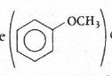
-
- Reaction with sodium metal usually happens when a compound has a hydrogen that can be removed as a proton comparatively easily.
-
Now check each option:
- Phenol has an \(-OH\) group, so it has an acidic hydrogen and reacts with sodium.
- Ethanol also has an \(-OH\) group and reacts with sodium to form sodium ethoxide and hydrogen gas.
- Benzoic acid has a \(-COOH\) group, and carboxylic acids react readily with sodium metal.
- Anisole is \(C_6H_5OCH_3\). It is an ether, not an alcohol or phenol. It has no acidic hydrogen on oxygen.
- Therefore anisole shows no reaction with sodium metal.
-
Structure clue from the given solution
-
Concept used / theory behind it
- Sodium metal reacts with compounds containing acidic hydrogen atoms to liberate hydrogen gas.
-
Important classes that react include:
- alcohols
- phenols
- carboxylic acids
- In these compounds, the hydrogen attached to oxygen is the relevant acidic hydrogen.
- An ether like anisole has oxygen, but it does not have an \(-OH\) bond.
- So simply having oxygen in the molecule is not enough. The molecule must have a removable acidic hydrogen.
-
Why the correct option is right
- Anisole is an ether and does not contain an \(-OH\) proton.
- So it does not react with sodium metal.
- Hence option (d) is correct.
-
Why other options are wrong or less suitable
- Phenol reacts because phenolic hydrogen is acidic.
- Ethanol reacts because alcohols react with sodium to give alkoxides and \(H_2\).
- Benzoic acid reacts even more readily because carboxylic acids are acidic.
-
Exam tip / shortcut / elimination clue
- First look for an \(-OH\) or \(-COOH\) group.
- If present, sodium reaction is likely.
- If the compound is an ether like anisole \((Ar-O-R)\), there is no acidic hydrogen on oxygen, so no reaction with sodium in this context.
-
Final result
- The compound that has no reaction with sodium metal is anisole.
- Answer: (d)
-
Chapter / topic / subtopic
- Chapter: Alcohols, Phenols and Ethers
- Topic: Chemical properties
- Subtopic: Reaction with sodium metal and acidic hydrogen
-
Correct answer: (c) \(C_6H_6 \xrightarrow{\text{CO, HCl /
Anhy. AlCl}_3,\ CuCl} C_6H_5CHO\)
Organic Compounds Containing C, H and O TTR - Explanation: Gattermann-Koch reaction is the formylation of benzene or an aromatic ring using carbon monoxide and hydrogen chloride in the presence of anhydrous \(AlCl_3\) and \(CuCl\), giving an aldehyde group \(( -CHO )\) on the ring. Therefore option (c) is the correct representation.
-
Step-by-step explanation
-
Named reaction clue from the given image
-
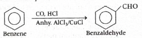
-
- To identify Gattermann-Koch reaction, look for introduction of a formyl group \(( -CHO )\) directly onto benzene.
-
The standard reaction is:
- \(C_6H_6 + CO + HCl \xrightarrow{\text{Anhy. }AlCl_3/CuCl} C_6H_5CHO\)
- This exactly matches option (c).
- So option (c) is correct.
-
Named reaction clue from the given image
-
Concept used / theory behind it
- Gattermann-Koch reaction is an electrophilic aromatic substitution reaction.
- Its purpose is to convert benzene into benzaldehyde by introducing a formyl group.
-
The reagents used are:
- \(CO\)
- \(HCl\)
- anhydrous \(AlCl_3\)
- \(CuCl\)
- This reaction is a very famous named formylation reaction of benzene.
- It is different from ordinary Friedel-Crafts acylation because here the product is an aldehyde, not a ketone.
-
Why the correct option is right
- Option (c) alone shows benzene reacting with \(CO\) and \(HCl\) in the presence of anhydrous \(AlCl_3\) and \(CuCl\) to form benzaldehyde.
- That is exactly the Gattermann-Koch reaction.
-
Why other options are wrong or less suitable
- Option (a) is Rosenmund reduction, where acid chloride is reduced to aldehyde using \(H_2/Pd-BaSO_4\).
- Option (b) is Etard reaction, oxidation of toluene side chain to benzaldehyde using chromyl chloride.
- Option (d) is Friedel-Crafts acylation, producing an aryl ketone, not Gattermann-Koch formylation.
-
Exam tip / shortcut / elimination clue
-
Remember this named-reaction mapping:
- \(CO + HCl + AlCl_3/CuCl\) on benzene → Gattermann-Koch
- \(RCOCl + H_2/Pd-BaSO_4\) → Rosenmund
- \(CrO_2Cl_2\) on toluene → Etard
- If you see benzene turning into benzaldehyde using \(CO\) and \(HCl\), the answer is immediately Gattermann-Koch.
-
Remember this named-reaction mapping:
-
Final result
- The reaction representing Gattermann-Koch reaction is option (c).
-
Chapter / topic / subtopic
- Chapter: Aldehydes, Ketones and Carboxylic Acids
- Topic: Preparation of aromatic aldehydes
- Subtopic: Gattermann-Koch reaction
-
Correct answer: (b) \(o\)-hydroxy benzaldehyde and
\(o\)-hydroxy benzoic acid.
Organic Compounds Containing C, H and O TTR - Explanation: Reimer-Tiemann reaction introduces a \(-CHO\) group into phenol mainly at the ortho position, while Kolbe’s reaction introduces a \(-COOH\) group into phenol mainly at the ortho position. So the products are salicylaldehyde and salicylic acid respectively.
-
Reaction scheme
-
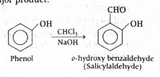
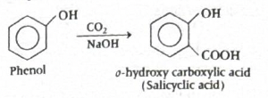
-
-
Step-by-step explanation
- In the Reimer-Tiemann reaction, phenol is treated with chloroform \((CHCl_3)\) and strong base such as \(NaOH\).
- Under these conditions, a formyl group \(( -CHO )\) gets introduced into the aromatic ring of phenol.
- Because the \(-OH\) group already present on phenol is an ortho-para directing group, substitution occurs mainly at the ortho position.
- So the major product is \(o\)-hydroxy benzaldehyde, also called salicylaldehyde.
- In the Kolbe reaction (more precisely Kolbe-Schmitt reaction), sodium phenoxide reacts with \(CO_2\) under pressure and then on acidification gives a carboxylic acid.
- Again, because the \(-OH\) group activates the ring and directs incoming substitution to ortho and para positions, the ortho product predominates.
- Thus the major product is \(o\)-hydroxy benzoic acid, also called salicylic acid.
-
Concept used / theory behind it
- Phenol contains an \(-OH\) group attached directly to the benzene ring.
- The oxygen lone pair donates electron density into the ring by resonance, making the ring more reactive toward electrophilic substitution.
- This resonance donation increases electron density particularly at the ortho and para positions.
- That is why many reactions of phenol give ortho/para substituted products.
- In both these named reactions, the ortho product is especially important and commonly asked in entrance exams.
-
Why the correct option is right
- Option (b) gives salicylaldehyde as the major product of Reimer-Tiemann reaction and salicylic acid as the major product of Kolbe’s reaction.
- That matches the standard NCERT/JEE chemistry facts exactly.
-
Why other options are wrong
- Option (a): Phenol itself and benzaldehyde are not the required products of these named reactions.
- Option (c): Reimer-Tiemann reaction does not give \(o\)-cresol; it gives a formyl-substituted phenol, not a methyl-substituted phenol.
- Option (d): These compounds are unrelated to the standard products of Reimer-Tiemann and Kolbe reactions.
-
Exam tip / shortcut / elimination clue
- Remember this easy memory link:
- Reimer-Tiemann \(\rightarrow\) aldehyde on phenol
- Kolbe-Schmitt \(\rightarrow\) carboxylic acid on phenol
- If the product has \(-CHO\), think Reimer-Tiemann.
- If the product has \(-COOH\), think Kolbe-Schmitt.
- For both, the major product is usually the ortho derivative.
-
Final result
- Major products are \(o\)-hydroxy benzaldehyde and \(o\)-hydroxy benzoic acid.
- Hence, option (b) is correct.
-
Chapter / topic / subtopic
- Chapter: Organic Chemistry
- Topic: Alcohols, Phenols and Ethers
- Subtopic: Named reactions of phenol (Reimer-Tiemann reaction and Kolbe-Schmitt reaction)
-
Correct answer: (c) Etard reaction.
Organic Chemistry – Some Basic Principles, Techniques and Hydrocarbons TTR
Organic Compounds Containing C, H and O TTR - Explanation: Sodium benzoate first gives benzene on decarboxylation, benzene gives toluene by Friedel-Crafts alkylation, and toluene on oxidation with chromyl chloride \((CrO_2Cl_2)\) in \(CS_2\) followed by hydrolysis gives benzaldehyde. This oxidation of an aromatic methyl group to an aldehyde is called the Etard reaction.
-
Reaction sequence
-
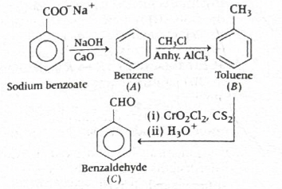
-
-
Step-by-step explanation
- Step 1: Sodium benzoate on heating with soda lime \((NaOH + CaO)\) undergoes decarboxylation.
- That removes the \(-COO^-Na^+\) group and gives benzene. So \(A =\) benzene.
- Step 2: Benzene reacts with \(CH_3Cl\) in presence of anhydrous \(AlCl_3\) by Friedel-Crafts alkylation.
- This introduces a methyl group into the ring and forms toluene. So \(B =\) toluene.
- Step 3: Toluene reacts with chromyl chloride \((CrO_2Cl_2)\) in \(CS_2\), and after hydrolysis \((H_3O^+)\), it forms benzaldehyde. So \(C =\) benzaldehyde.
- The named reaction for converting an aromatic \(-CH_3\) group into \(-CHO\) using chromyl chloride is called the Etard reaction.
-
Concept used / theory behind it
- Soda lime decarboxylation converts sodium salt of a carboxylic acid into a hydrocarbon having one carbon less.
- Friedel-Crafts alkylation introduces an alkyl group into benzene using alkyl halide and \(AlCl_3\).
- Etard reaction is a controlled oxidation of the side-chain methyl group of aromatic compounds to aldehyde, not all the way to carboxylic acid.
- This is important because many oxidizing agents would take toluene directly to benzoic acid, but chromyl chloride gives the aldehyde stage.
-
Why the correct option is right
- \(B\) is toluene and \(C\) is benzaldehyde.
- The reagent set \((CrO_2Cl_2 / CS_2)\) followed by hydrolysis is the classic clue for Etard oxidation.
- Therefore conversion of \(B\) to \(C\) is Etard reaction.
-
Why other options are wrong
- Stephen’s reaction: Converts nitriles into aldehydes, so it does not fit this sequence.
- Rosenmund reduction: Converts acid chlorides to aldehydes using poisoned catalyst, not methyl side-chain oxidation.
- Gatterman reaction: Refers to formylation/halogenation-related named reactions depending on context, but not this chromyl chloride oxidation.
-
Exam tip / shortcut / elimination clue
- Whenever you see \(CrO_2Cl_2\) acting on toluene or an alkyl benzene to form an aldehyde, immediately think Etard reaction.
- Also remember:
- Stephen \(\rightarrow\) nitrile to aldehyde
- Rosenmund \(\rightarrow\) acid chloride to aldehyde
- Etard \(\rightarrow\) alkyl benzene to aldehyde
-
Final result
- \(A =\) benzene, \(B =\) toluene, \(C =\) benzaldehyde.
- Thus \(B \rightarrow C\) is Etard reaction.
- Hence, option (c) is correct.
-
Chapter / topic / subtopic
- Chapter: Organic Chemistry
- Topic: Hydrocarbons / Aldehydes, Ketones and Carboxylic Acids
- Subtopic: Named reactions involving aromatic compounds and side-chain oxidation
-
Correct answer: (c) \(p\)-nitroaniline.
Organic Compounds Containing Nitrogen TTR - Explanation: Acetic acid first forms ethanoic anhydride, which converts aniline into acetanilide. Acetanilide on nitration gives mainly \(p\)-nitroacetanilide because the \(-NHCOCH_3\) group is ortho-para directing and para product is favored sterically. Hydrolysis then removes the acetyl protecting group to give \(p\)-nitroaniline as the major product.
-
Reaction pathway
-
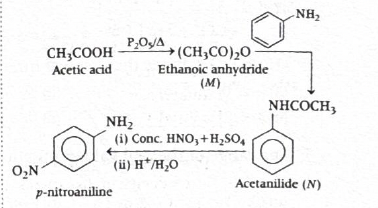
-
-
Step-by-step explanation
- Step 1: Acetic acid \((CH_3COOH)\) on heating with \(P_2O_5\) forms ethanoic anhydride \(((CH_3CO)_2O)\). So \(M =\) ethanoic anhydride.
- Step 2: Ethanoic anhydride reacts with aniline \((C_6H_5NH_2)\) to form acetanilide. So \(N =\) acetanilide.
- This step is basically acetylation of aniline.
- Step 3: Acetanilide undergoes nitration with \(HNO_3/H_2SO_4\) at \(288\ K\).
- The \(-NHCOCH_3\) group donates electron density by resonance and directs incoming electrophile to ortho and para positions.
- Among ortho and para products, the para product is major because it suffers less steric hindrance.
- So nitration gives mainly \(p\)-nitroacetanilide.
- Step 4: Acidic hydrolysis removes the acetyl group from acetanilide derivative and regenerates the amino group.
- Hence the final product \(R\) is \(p\)-nitroaniline.
-
Concept used / theory behind it
- This question is built around the idea of protection of the amino group.
- Aniline itself is too reactive in strongly acidic nitration mixture, and direct nitration may lead to complications including oxidation and formation of a significant meta product through protonated aniline effects.
- So chemists first convert aniline into acetanilide.
- The acetamido group \(( -NHCOCH_3 )\) is still ortho-para directing, but it makes the reaction more controlled.
- Then nitration occurs mainly at para position.
- Finally, hydrolysis removes the protecting acetyl group and gives the desired substituted aniline.
-
Why the correct option is right
- The final hydrolysis step converts \(p\)-nitroacetanilide into \(p\)-nitroaniline.
- This is the standard preparation route used in aromatic amine chemistry.
-
Why other options are wrong
- Option (a): \(o\)-nitroaniline is not the major product because para substitution is favored over ortho due to lower steric hindrance.
- Option (b): \(m\)-nitroaniline is not expected here because acetanilide is an ortho-para director, not a meta director.
- Option (d): \(p\)-aminobenzene sulphonic acid would come from sulphonation-related chemistry, not from this nitration-hydrolysis sequence.
-
Exam tip / shortcut / elimination clue
- Whenever you see aniline \(\rightarrow\) acetanilide \(\rightarrow\) nitration \(\rightarrow\) hydrolysis, the expected major product is usually \(p\)-nitroaniline.
- Think of acetanilide as a temporary protection step that controls nitration.
- Para product is usually major because ortho substitution gets crowded near the bulky acetamido group.
-
Final result
- The major product \(R\) is \(p\)-nitroaniline.
- Hence, option (c) is correct.
-
Chapter / topic / subtopic
- Chapter: Amines
- Topic: Protection of amino group and electrophilic substitution in aromatic amines
- Subtopic: Acetylation of aniline, nitration of acetanilide, hydrolysis to \(p\)-nitroaniline
-
Correct answer: (c) \(CH_3OH\).
Organic Compounds Containing Nitrogen TTR - Explanation: Acetamide reacts with \(Br_2/NaOH\) by Hofmann bromamide reaction to give methylamine \((CH_3NH_2)\). A primary aliphatic amine with \(NaNO_2 + HCl\) forms an unstable diazonium intermediate, which on hydrolysis gives the corresponding alcohol. Therefore methylamine gives methanol \((CH_3OH)\) as the major product.
-
Reaction scheme
-
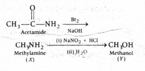
-
-
Step-by-step explanation
- The starting compound is acetamide, \(CH_3CONH_2\).
- When an amide is treated with \(Br_2\) and aqueous \(NaOH\), it undergoes the Hofmann bromamide reaction.
- In this reaction, the amide loses the carbonyl carbon and forms a primary amine having one carbon less.
- So \(CH_3CONH_2\) gives \(CH_3NH_2\), that is methylamine. Therefore \(X = CH_3NH_2\).
- Now methylamine is a primary aliphatic amine.
- Primary aliphatic amines react with nitrous acid \((NaNO_2 + HCl)\) to form highly unstable aliphatic diazonium salts.
- These unstable intermediates immediately decompose, and on hydrolysis the \(-NH_2\) group is replaced by \(-OH\).
- Therefore methylamine finally gives methanol, \(CH_3OH\).
- Hence \(Y = CH_3OH\).
-
Concept used / theory behind it
- Hofmann bromamide degradation converts \(RCONH_2\) into \(RNH_2\) using \(Br_2\) and \(NaOH\).
- The key result is: one carbon is lost.
- So if you begin with a two-carbon amide like acetamide, you get a one-carbon amine like methylamine.
- Next, primary aliphatic amines with nitrous acid do not give stable diazonium salts.
- Instead, they decompose and are converted into alcohols.
- This is different from primary aromatic amines, which form relatively stable diazonium salts at low temperature.
-
Why the correct option is right
- \(CH_3CONH_2 \xrightarrow{Br_2/NaOH} CH_3NH_2\)
- \(CH_3NH_2 \xrightarrow[(ii)\ H_2O]{(i)\ NaNO_2 + HCl} CH_3OH\)
- So \(Y\) is clearly \(CH_3OH\).
-
Why other options are wrong
- Option (a): \(CH_3NH_2\) is the intermediate \(X\), not the final product \(Y\).
- Option (b): \(CH_3CONHBr\) is not the final product of the sequence.
- Option (d): \(BrCH_2CONH_2\) is unrelated to the given reaction path.
-
Exam tip / shortcut / elimination clue
- Memorize these two quick facts:
- Amide + \(Br_2/NaOH\) \(\rightarrow\) amine with one less carbon
- Primary aliphatic amine + \(HONO\) \(\rightarrow\) alcohol
- So here: acetamide \(\rightarrow\) methylamine \(\rightarrow\) methanol.
-
Final result
- \(Y = CH_3OH\)
- Hence, option (c) is correct.
-
Chapter / topic / subtopic
- Chapter: Amines
- Topic: Preparation and reactions of amines
- Subtopic: Hofmann bromamide reaction and reaction of primary aliphatic amines with nitrous acid